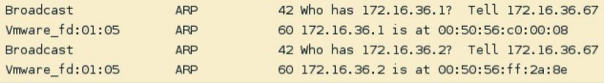
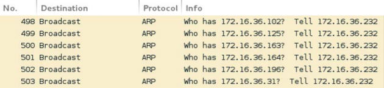
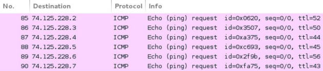

第二章 探索扫描
作者：Justin Hutchens
译者：飞龙
2.1 使用 Scapy 探索第二层
Scapy 是一个强大的交互工具，可用于捕获，分析，操作甚至创建协议兼容的网络流量，然后注入到网络中。 Scapy 也是一个可以在 Python 中使用的库，从而提供创建高效的脚本，来执行网络流量处理和操作的函数。 这个特定的秘籍演示了如何使用 Scapy 执行 ARP 发现，以及如何使用P ython 和 Scapy 创建脚本来简化第二层发现过程。
准备
要使用 Scapy 执行 ARP 发现，你需要在 LAN 上至少拥有一个响应 ARP 请求的系统。 提供的示例使用 Linux 和 Windows 系统的组合。 有关在本地实验环境中设置系统的更多信息，请参阅第一章入中的“安装 Metasploitable2”和“安装 Windows Server”秘籍。
此外，本节需要使用文本编辑器（如 VIM 或 Nano）将脚本写入文件系统。 有关编写脚本的更多信息，请参阅第一章入门中的“使用文本编辑器（VIM 和 Nano）”秘籍。
操作步骤
为了了解 ARP 发现的工作原理，我们使用 Scapy 来开发自定义数据包，这允让我们能够使用 ARP 识别 LAN 上的主机。 要在 Kali Linux 中开始使用 Scapy，请从终端输入scapy命令。 然后，你可以使用display()函数以下列方式查看在 Scapy 中创建的任何 ARP 对象的默认配置：
root@KaliLinux:~# scapy Welcome to Scapy (2.2.0)
>>> ARP().display()
###[ ARP ]###
hwtype= 0x1
ptype= 0x800
hwlen= 6
plen= 4
op= who-has
hwsrc= 00:0c:29:fd:01:05
psrc= 172.16.36.232
hwdst= 00:00:00:00:00:00
pdst= 0.0.0.0
请注意，IP 和 MAC 源地址都会自动配置为与运行 Scapy 的主机相关的值。 除非你需要伪造源地址，否则对于任何 Scapy 对象永远不必更改这些值。 ARP 的默认操作码值被自动设置为who-has，表明该封包用于请求 IP 和 MAC 关联。 在这种情况下，我们需要提供的唯一值是目标 IP 地址。 为此，我们可以使用 ARP 函数创建一个对象，将其赋给一个变量。 变量的名称是无所谓（在提供的示例中，使用变量名称arp_request）。 看看下面的命令：
>>> arp_request = ARP()
>>> arp_request.pdst = "172.16.36.135"
>>> arp_request.display()
###[ ARP ]###
hwtype= 0x1
ptype= 0x800
hwlen= 6
plen= 4
op= who-has
hwsrc= 00:0c:29:65:fc:d2
psrc= 172.16.36.132
hwdst= 00:00:00:00:00:00
pdst= 172.16.36.135
注意，display()函数可以在新创建的 ARP 对象上调用，来验证配置值是否已更新。 对于此练习，请使用与实验环境网络中的活动计算机对应的目标 IP 地址。 然后sr1()函数可以用于发送请求并返回第一个响应：
>>> sr1(arp_request)
Begin emission:
......................................*
Finished to send 1 packets.
Received 39 packets, got 1 answers, remaining 0 packets
<ARP hwtype=0x1 ptype=0x800 hwlen=6 plen=4 op=is-at hwsrc=00:0c:29:3d:84:32 psrc=172.16.36.135 hwdst=00:0c:29:65:fc:d2 pdst=172.16.36.132 |<Padding load='\x00\x00\x00\x00\x00\x00\x00\x00\x00\ x00\x00\x00\x00\x00\x00\x00\x00\x00' |>>
或者，模可以通过直接调用该函数，并将任何特殊配置作为参数传递给它，来执行相同的任务，如以下命令所示。 这可以避免使用不必要的变量的混乱，并且还可以在单行代码中完成整个任务：
>>> sr1(ARP(pdst="172.16.36.135"))
Begin emission: .........................*
Finished to send 1 packets.
Received 26 packets, got 1 answers, remaining 0 packets
<ARP hwtype=0x1 ptype=0x800 hwlen=6 plen=4 op=is-at hwsrc=00:0c:29:3d:84:32 psrc=172.16.36.135 hwdst=00:0c:29:65:fc:d2 pdst=172.16.36.132 |<Padding load='\x00\x00\x00\x00\x00\x00\x00\x00\x00\ x00\x00\x00\x00\x00\x00\x00\x00\x00' |>>
注意，在这些情况的每一个中，返回响应表明，172.16.36.135的 IP 地址的 MAC 地址为00：0C：29：3D：84：32。 如果执行相同的任务，但是目标 IP 地址不对应实验环境网络上的活动主机，则不会收到任何响应，并且该功能将无限继续分析本地接口上传入的流量 。
你可以使用Ctrl + C强制停止该函数。或者，你可以指定一个timeout参数来避免此问题。 当 Scapy 在P ython 脚本中使用时，超时的使用将变得至关重要。 要使用超时，应向发送/接收函数提供一个附加参数，指定等待传入响应的秒数：
>>> arp_request.pdst = "172.16.36.134"
>>> sr1(arp_request, timeout=1)
Begin emission:
......................................................................... ............
Finished to send 1 packets.
................................. ......................................................................... ........................................
Received 3285 packets, got 0 answers, remaining 1 packets
>>>
通过使用超时功能，发送到非响应主机的请求将在指定的时间之后返回，并显示捕获到 0 个应答。 此外，此函数收到的响应也可以赋给变量，并且可以通过访问此变量对响应执行后续处理：
>>> response = sr1(arp_request, timeout=1)
Begin emission:
....................................*
Finished to send 1 packets.
Received 37 packets, got 1 answers, remaining 0 packets
>>> response.display()
###[ ARP ]###
hwtype= 0x1
ptype= 0x800
hwlen= 6
plen= 4
op= is-at
hwsrc= 00:0c:29:3d:84:32
psrc= 172.16.36.135
hwdst= 00:0c:29:65:fc:d2
pdst= 172.16.36.132
###[ Padding ]###
load= '\x00\x00\x00\x00\x00\x00\x00\x00\x00\x00\x00\x00\x00\x00\x00\ x00\x00\x00'
Scapy也可以用作 Python 脚本语言中的库。 这可以用于高效自动执行 Scapy 中执行的冗余任务。 Python 和 Scapy 可以用于循环遍历本地子网内的每个可能的主机地址，并向每个子网发送 ARP 请求。 下面的示例脚本可用于在主机的连续序列上执行第二层发现：
#!/usr/bin/python
import logging
import subprocess
logging.getLogger("scapy.runtime").setLevel(logging.ERROR)
from scapy.all import *
if len(sys.argv) != 2:
print "Usage - ./arp_disc.py [interface]"
print "Example - ./arp_disc.py eth0"
print "Example will perform an ARP scan of the local subnet to which eth0 is assigned"
sys.exit()
interface = str(sys.argv[1])
ip = subprocess.check_output("ifconfig " + interface + " | grep 'inet addr' | cut -d ':' -f 2 | cut -d ' ' -f 1", shell=True).strip()
prefix = ip.split('.')[0] + '.' + ip.split('.')[1] + '.' + ip.split('.')[2] + '.'
for addr in range(0,254):
answer=sr1(ARP(pdst=prefix+str(addr)),timeout=1,verbose=0)
if answer == None:
pass
else:
print prefix+str(addr)
脚本的第一行标识了 Python 解释器所在的位置，以便脚本可以在不传递到解释器的情况下执行。 然后脚本导入所有 Scapy 函数，并定义 Scapy 日志记录级别，以消除脚本中不必要的输出。 还导入了子过程库，以便于从系统调用中提取信息。 第二个代码块是条件测试，用于评估是否向脚本提供了所需的参数。 如果在执行时未提供所需的参数，则脚本将输出使用情况的说明。 该说明包括工具的用法，示例和所执行任务的解释。
在这个代码块之后，有一个单独的代码行将所提供的参数赋值给interface变量。下一个代码块使用check_output()子进程函数执行ifconfig系统调用，该调用也使用grep和cut从作为参数提供的本地接口提取 IP 地址。然后将此输出赋给ip变量。然后使用split函数从 IP 地址字符串中提取/ 24网络前缀。例如，如果ip变量包含192.168.11.4字符串，则值为192.168.11。它将赋给prefix变量。最后一个代码块是一个用于执行实际扫描的for循环。 for循环遍历介于 0 和 254 之间的所有值，并且对于每次迭代，该值随后附加到网络前缀后面。在早先提供的示例的中，将针对192.168.11.0和192.168.11.254之间的每个 IP 地址广播 ARP 请求。然后对于每个回复的活动主机，将相应的 IP 地址打印到屏幕上，以表明主机在 LAN 上活动。一旦脚本被写入本地目录，你可以在终端中使用句号和斜杠，然后是可执行脚本的名称来执行它。看看以下用于执行脚本的命令：
root@KaliLinux:~# ./arp_disc.py
Usage - ./arp_disc.py [interface]
Example - ./arp_disc.py eth0
Example will perform an ARP scan of the local subnet to which eth0 is assigned
如果在没有提供任何参数的情况下执行脚本，则会将使用情况输出到屏幕。 用法输出表明此脚本需要一个参数，该参数定义应使用哪个接口执行扫描。 在以下示例中，使用eth0接口执行脚本：
root@KaliLinux:~# ./arp_disc.py eth0
172.16.36.1
172.16.36.2
172.16.36.132
172.16.36.135
172.16.36.254
一旦运行，脚本将确定提供的接口的本地子网; 在此子网上执行 ARP 扫描，然后根据来自这些 IP 的主机的响应输出 IP 地活动址列表。 此外，Wireshark 可以同时运行，因为脚本正在运行来观察如何按顺序广播每个地址的请求，以及活动主机如何响应这些请求，如以下屏幕截图所示：

此外，我们可以轻易将脚本的输出重定向到文本文件，然后可以用于随后的分析。 可以使用尖括号重定向输出，后跟文本文件的名称。 一个例子如下：
root@KaliLinux:~# ./arp_disc.py eth0 > output.txt
root@KaliLinux:~# ls output.txt
output.txt
root@KaliLinux:~# cat output.txt
172.16.36.1
172.16.36.2
172.16.36.132
172.16.36.135
172.16.36.254
一旦输出重定向到输出文件，你可以使用ls命令验证文件是否已写入文件系统，或者可以使用cat命令查看文件的内容。 此脚本还可以轻松地修改为，仅对文本文件中包含的某些 IP 地址执行 ARP 请求。 为此，我们首先需要创建一个我们希望扫描的 IP 地址列表。 为此，模可以使用 Nano 或 VIM 文本编辑器。 为了评估脚本的功能，请包含先之前发现的一些活动地址，以及位于不对应任何活动主机的相同范围内的一些其他随机选择的地址。 为了在 VIM 或 Nano 中创建输入文件，请使用以下命令之一：
root@KaliLinux:~# vim iplist.txt
root@KaliLinux:~# nano iplist.txt
创建输入文件后，可以使用cat命令验证其内容。 假设文件已正确创建，你应该会看到你在文本编辑器中输入的 IP 地址列表：
root@KaliLinux:~# cat iplist.txt
172.16.36.1
172.16.36.2
172.16.36.232
172.16.36.135
172.16.36.180
172.16.36.203
172.16.36.205
172.16.36.254
为了创建一个将接受文本文件作为输入的脚本，我们可以修改上一个练习中的现有脚本，或创建一个新的脚本文件。 为了在我们的脚本中使用这个 IP 地址列表，我们需要在 Python 中执行一些文件处理。 工作脚本的示例如下所示：
#!/usr/bin/python
import logging
logging.getLogger("scapy.runtime").setLevel(logging.ERROR)
from scapy.all import *
if len(sys.argv) != 2:
print "Usage - ./arp_disc.py [filename]"
print "Example - ./arp_disc.py iplist.txt"
print "Example will perform an ARP scan of the IP addresses listed in iplist.txt"
sys.exit()
filename = str(sys.argv[1])
file = open(filename,'r')
for addr in file:
answer = sr1(ARP(pdst=addr.strip()),timeout=1,verbose=0)
if answer == None:
pass
else:
print addr.strip()
这个脚本和以前用来循环遍历连续序列的脚本中唯一的真正区别是，创建一个称为file而不是interface的变量。 然后使用open()函数，通过在脚本的相同目录中打开iplist.txt文件，来创建对象。 r值也传递给函数来指定对文件的只读访问。 for循环遍历文件中列出的每个 IP 地址，然后输出回复 ARP 广播请求的 IP 地址。 此脚本可以以与前面讨论的相同方式执行：
root@KaliLinux:~# ./arp_disc.py
Usage - ./arp_disc.py [filename]
Example - ./arp_disc.py iplist.txt
Example will perform an ARP scan of the IP addresses listed in iplist.txt
如果在没有提供任何参数的情况下执行脚本，则会将使用情况输出到屏幕。 使用情况输出表明，此脚本需要一个参数，用于定义要扫描的 IP 地址的输入列表。 在以下示例中，使用执行目录中的iplist.txt文件执行脚本：
root@KaliLinux:~# ./arp_disc.py iplist.txt
172.16.36.2
172.16.36.1
172.16.36.132
172.16.36.135
172.16.36.254
一旦运行，脚本只会输出输入文件中的 IP 地址，并且也响应 ARP 请求流量。 这些地址中的每一个表示在 LAN 上的活动系统。 使用与前面讨论的相同的方式，此脚本的输出可以轻易重定向到一个文件，使用尖1括号后跟输出文件的所需名称：
root@KaliLinux:~# ./arp_disc.py iplist.txt > output.txt
root@KaliLinux:~# ls output.txt
output.txt
root@KaliLinux:~# cat output.txt
172.16.36.2
172.16.36.1
172.16.36.132
172.16.36.135
172.16.36.254
一旦将输出重定向到输出文件，你可以使用ls命令验证文件是否已写入文件系统，或者可以使用cat命令查看文件的内容。
工作原理
通过使用sr1()（发送/接收单个）功能，可以在 Scapy 中进行 ARP 发现。 此函数注入由提供的参数定义的数据包，然后等待接收单个响应。 在这种情况下，我们广播了单个 ARP 请求，并且函数将返回响应。 Scapy 库可以将此技术轻易集成到脚本中，并可以测试多个系统。
2.2 使用 ARPing 探索第二层
ARPing 是一个命令行网络工具，具有类似于常用的ping工具的功能。 此工具可通过提供该 IP 地址作为参数，来识别活动主机是否位于给定 IP 的本地网络上。 这个秘籍将讨论如何使用 ARPing 扫描网络上的活动主机。
准备
要使用 ARPing 执行 ARP 发现，你需要在 LAN 上至少拥有一个响应 ARP 请求的系统。 提供的示例使用 Linux 和 Windows 系统的组合。 有关在本地实验环境中设置系统的更多信息，请参阅第一章入中的“安装 Metasploitable2”和“安装 Windows Server”秘籍。
此外，本节需要使用文本编辑器（如 VIM 或 Nano）将脚本写入文件系统。 有关编写脚本的更多信息，请参阅第一章入门中的“使用文本编辑器（VIM 和 Nano）”秘籍。
操作步骤
ARPing是一种工具，可用于发送 ARP 请求并标识主机是否活动和响应。 该工具仅通过将 IP 地址作为参数传递给它来使用：
root@KaliLinux:~# arping 172.16.36.135 -c 1
ARPING 172.16.36.135
60 bytes from 00:0c:29:3d:84:32 (172.16.36.135): index=0 time=249.000 usec
--- 172.16.36.135 statistics --
1 packets transmitted, 1 packets received, 0% unanswered (0 extra)
在所提供的示例中，单个 ARP 请求被发送给广播地址，请求172.16.36.135 IP 地址的物理位置。 如输出所示，主机从00：0C：29：3D：84：32 MAC地址接收到单个应答。 此工具可以更有效地用于第二层上的发现，扫描是否使用 bash 脚本在多个主机上同时执行此操作。 为了测试 bash 中每个实例的响应，我们应该确定响应中包含的唯一字符串，它标识了活动主机，但不包括没有收到响应时的情况。 要识别唯一字符串，应该对无响应的 IP 地址进行 ARPing 请求：
root@KaliLinux:~# arping 172.16.36.136 -c 1
ARPING 172.16.36.136
--- 172.16.36.136 statistics --
1 packets transmitted, 0 packets received, 100% unanswered (0 extra)
通过分析来自成功和失败的不同 ARP 响应，你可能注意到，如果存在所提供的 IP 地址的相关活动主机，并且它也在包含在 IP 地址的行内，则响应中存在来自字符串的唯一字节。 通过对此响应执行grep，我们可以提取每个响应主机的 IP 地址：
root@KaliLinux:~# arping -c 1 172.16.36.135 | grep "bytes from"
60 bytes from 00:0c:29:3d:84:32 (172.16.36.135): index=0 time=10.000 usec
root@KaliLinux:~# arping -c 1 172.16.36.135 | grep "bytes from" | cut -d " " -f 4
00:0c:29:3d:84:32
我们可以仅仅通过处理提供给cut函数的分隔符和字段值，从返回的字符串中轻松地提取 IP 地址：
root@KaliLinux:~# arping -c 1 172.16.36.135 | grep "bytes from"
60 bytes from 00:0c:29:3d:84:32 (172.16.36.135): index=0 time=328.000 usec
root@KaliLinux:~# arping -c 1 172.16.36.135 | grep "bytes from" | cut -d " " -f 5 (172.16.36.135):
root@KaliLinux:~# arping -c 1 172.16.36.135 | grep "bytes from" | cut -d " " -f 5 | cut -d "(" -f 2 172.16.36.135):
root@KaliLinux:~# arping -c 1 172.16.36.135 | grep "bytes from" | cut -d " " -f 5 | cut -d "(" -f 2 | cut -d ")" -f 1
172.16.36.135
在识别如何从正面 ARPing 响应中提取 IP 在 bash 脚本中轻易将该任务传递给循环，并输出实时 IP 地址列表。 使用此技术的脚本的示例如下所示：
#!/bin/bash
if [ "$#" -ne 1 ]; then
echo "Usage - ./arping.sh [interface]"
echo "Example - ./arping.sh eth0"
echo "Example will perform an ARP scan of the local subnet to which eth0 is assigned"
exit
fi
interface=$1
prefix=$(ifconfig $interface | grep 'inet addr' |
cut -d ':' -f 2 | cut -d ' ' -f 1 | cut -d '.' -f 1-3)
for addr in $(seq 1 254); do
arping -c 1 $prefix.$addr | grep "bytes from" | cut -d " " -f 5 | cut -d "(" -f 2 | cut -d ")" -f 1 &
done
在提供的 bash 脚本中，第一行定义了 bash 解释器的位置。接下来的代码块执行测试，来确定是否提供了预期的参数。这通过评估提供的参数的数量是否不等于 1 来确定。如果未提供预期参数，则输出脚本的用法，并且退出脚本。用法输出表明，脚本预期将本地接口名称作为参数。下一个代码块将提供的参数赋给interface变量。然后将接口值提供给ifconfig，然后使用输出提取网络前缀。例如，如果提供的接口的 IP 地址是192.168.11.4，则前缀变量将赋为192.168.11。然后使用for循环遍历最后一个字节的值，来在本地/ 24网络中生成每个可能的 IP 地址。对于每个可能的 IP 地址，执行单个arping命令。然后对每个请求的响应通过管道进行传递，然后使用grep来提取带有短语bytes的行。如前所述，这只会提取包含活动主机的 IP 地址的行。最后，使用一系列cut函数从此输出中提取 IP 地址。请注意，在for循环任务的末尾使用&符号，而不是分号。符号允许并行执行任务，而不是按顺序执行。这极大地减少了扫描 IP 范围所需的时间。看看下面的命令集：
root@KaliLinux:~# ./arping.sh
Usage - ./arping.sh [interface]
Example - ./arping.sh eth0
Example will perform an ARP scan of the local subnet to which eth0 is assigned
root@KaliLinux:~# ./arping.sh eth0
172.16.36.1
172.16.36.2
172.16.36.132
172.16.36.135
172.16.36.254
可以轻易将脚本的输出重定向到文本文件，然后用于随后的分析。 可以使用尖括号重定向输出，后跟文本文件的名称。 一个例子如下：
root@KaliLinux:~# ./arping.sh eth0 > output.txt
root@KaliLinux:~# ls output.txt
output.txt
root@KaliLinux:~# cat output.txt
172.16.36.1
172.16.36.2
172.16.36.132
172.16.36.135
172.16.36.254
一旦输出重定向到输出文件，你就可以使用ls命令验证文件是否已写入文件系统，或者可以使用cat命令查看文件的内容。 此脚本还可以修改为从输入文件读取，并仅验证此文件中列出的主机是否处于活动状态。 对于以下脚本，你需要拥有 IP 地址列表的输入文件。 为此，我们可以使用与上一个秘籍中讨论的 Scapy 脚本所使用的相同的输入文件：
#!/bin/bash
if [ "$#" -ne 1 ]; then
echo "Usage - ./arping.sh [input file]"
echo "Example - ./arping.sh iplist.txt"
echo "Example will perform an ARP scan of all IP addresses defined in iplist.txt"
exit
fi
file=$1
for addr in $(cat $file); do
arping -c 1 $addr | grep "bytes from" | cut -d " " -f 5 | cut -d "(" -f 2 | cut -d ")" -f 1 &
done
这个脚本和前一个脚本唯一的主要区别是，并没有提供一个接口名，而是在执行脚本时提供输入列表的文件名。 这个参数被传递给文件变量。 然后，for循环用于循环遍历此文件中的每个值，来执行 ARPing 任务。 为了执行脚本，请使用句号和斜杠，后跟可执行脚本的名称：
root@KaliLinux:~# ./arping.sh
Usage - ./arping.sh [input file]
Example - ./arping.sh iplist.txt
Example will perform an ARP scan of all IP addresses defined in iplist.txt
root@KaliLinux:~# ./arping.sh iplist.txt
172.16.36.1
172.16.36.2
172.16.36.132
172.16.36.135
172.16.36.254
在没有提供任何参数的情况下执行脚本将返回脚本的用法。 此用法表示，应提供输入文件作为参数。 此操作完成后将执行脚本，并从输入的 IP 地址列表返回实时 IP 地址列表。 使用与前面讨论的相同的方式，此脚本的输出可以通过尖括号轻易重定向到输出文件。 一个例子如下：
root@KaliLinux:~# ./arping.sh iplist.txt > output.txt
root@KaliLinux:~# ls output.txt
output.txt
root@KaliLinux:~# cat output.txt
172.16.36.1
172.16.36.2
172.16.36.132
172.16.36.135
172.16.36.254
一旦输出重定向到输出文件，你可以使用ls命令验证文件是否已写入文件系统，或者可以使用cat命令查看文件的内容。
工作原理
ARPing 是一个工具，用于验证单个主机是否在线。 然而，它的简单用法的使我们很容易操作它在 bash 中按顺序扫描多个主机。 这是通过循环遍历一系列 IP 地址，然后将这些 IP 地址作为参数提供给工具来完成的。
2.3 使用 Nmap 探索第二层
网络映射器（Nmap）是 Kali Linux 中最有效和强大的工具之一。 Nmap 可以用于执行大范围的多种扫描技术，并且可高度定制。 这个工具在整本书中会经常使用。 在这个特定的秘籍中，我们将讨论如何使用 Nmap 执行第2层扫描。
准备
要使用 ARPing 执行 ARP 发现，你需要在 LAN 上至少拥有一个响应 ARP 请求的系统。 提供的示例使用 Linux 和 Windows 系统的组合。 有关在本地实验环境中设置系统的更多信息，请参阅第一章入中的“安装 Metasploitable2”和“安装 Windows Server”秘籍。
操作步骤
Nmap 是使用单个命令执行自动化第二层发现扫描的另一个方案。 -sn选项在 Nmap 中称为ping扫描。 虽然术语“ping 扫描”自然会导致你认为正在执行第三层发现，但实际上是自适应的。 假设将同一本地子网上的地址指定为参数，可以使用以下命令执行第2层扫描：
root@KaliLinux:~# nmap 172.16.36.135 -sn
Starting Nmap 6.25 ( http://nmap.org ) at 2013-12-16 15:40 EST
Nmap scan report for 172.16.36.135
Host is up (0.00038s latency).
MAC Address: 00:0C:29:3D:84:32 (VMware)
Nmap done: 1 IP address (1 host up) scanned in 0.17 seconds
此命令向 LAN 广播地址发送 ARP 请求，并根据接收到的响应确定主机是否处于活动状态。 或者，如果对不活动主机的 IP 地址使用该命令，则响应会表示主机关闭：
root@KaliLinux:~# nmap 172.16.36.136 -sn
Starting Nmap 6.25 ( http://nmap.org ) at 2013-12-16 15:51 EST
Note: Host seems down. If it is really up, but blocking our ping probes, try -Pn
Nmap done: 1 IP address (0 hosts up) scanned in 0.41 seconds
我们可以修改此命令，来使用破折号符号对一系列顺序 IP 地址执行第2层发现。 要扫描完整的/ 24范围，可以使用0-255：
root@KaliLinux:~# nmap 172.16.36.0-255 -sn
Starting
Nmap 6.25 ( http://nmap.org ) at 2013-12-11 05:35 EST
Nmap scan report for 172.16.36.1
Host is up (0.00027s latency).
MAC Address: 00:50:56:C0:00:08 (VMware)
Nmap scan report for 172.16.36.2
Host is up (0.00032s latency).
MAC Address: 00:50:56:FF:2A:8E (VMware)
Nmap scan report for 172.16.36.132
Host is up.
Nmap scan report for 172.16.36.135
Host is up (0.00051s latency).
MAC Address: 00:0C:29:3D:84:32 (VMware)
Nmap scan report for 172.16.36.200
Host is up (0.00026s latency).
MAC Address: 00:0C:29:23:71:62 (VMware)
Nmap scan report for 172.16.36.254
Host is up (0.00015s latency).
MAC Address: 00:50:56:EA:54:3A (VMware)
Nmap done: 256 IP addresses (6 hosts up) scanned in 3.22 seconds
使用此命令将向该范围内的所有主机发送 ARP 广播请求，并确定每个主动响应的主机。 也可以使用-iL选项对 IP 地址的输入列表执行此扫描：
root@KaliLinux:~# nmap -iL iplist.txt -sn
Starting Nmap 6.25 ( http://nmap.org ) at 2013-12-16 16:07 EST
Nmap scan report for 172.16.36.2
Host is up (0.00026s latency).
MAC Address: 00:50:56:FF:2A:8E (VMware)
Nmap scan report for 172.16.36.1
Host is up (0.00021s latency).
MAC Address: 00:50:56:C0:00:08 (VMware)
Nmap scan report for 172.16.36.132
Host is up (0.00031s latency).
MAC Address: 00:0C:29:65:FC:D2 (VMware)
Nmap scan report for 172.16.36.135
Host is up (0.00014s latency).
MAC Address: 00:0C:29:3D:84:32 (VMware)
Nmap scan report for 172.16.36.180
Host is up.
Nmap scan report for 172.16.36.254
Host is up (0.00024s latency).
MAC Address: 00:50:56:EF:B9:9C (VMware)
Nmap done: 8 IP addresses (6 hosts up) scanned in 0.41 seconds
当使用-sn选项时，Nmap 将首先尝试使用第2层 ARP 请求定位主机，并且如果主机不位于 LAN 上，它将仅使用第3层 ICMP 请求。 注意对本地网络（在172.16.36.0/24专用范围）上的主机执行的 Nmap ping 扫描才能返回 MAC 地址。 这是因为 MAC 地址由来自主机的 ARP 响应返回。 但是，如果对不同 LAN 上的远程主机执行相同的 Nmap ping 扫描，则响应不会包括系统的 MAC 地址。
root@KaliLinux:~# nmap -sn 74.125.21.0-255
Starting Nmap 6.25 ( http://nmap.org ) at 2013-12-11 05:42 EST
Nmap scan report for 74.125.21.0
Host is up (0.0024s latency).
Nmap scan report for 74.125.21.1
Host is up (0.00017s latency).
Nmap scan report for 74.125.21.2
Host is up (0.00028s latency).
Nmap scan report for 74.125.21.3
Host is up (0.00017s latency).
当对远程网络范围（公共范围74.125.21.0/24）执行时，你可以看到，使用了第三层发现，因为没有返回 MAC 地址。 这表明，Nmap 会尽可能自动利用第二层发现的速度，但在必要时，它将使用可路由的 ICMP 请求，在第三层上发现远程主机。如果你使用 Wireshark 监控流量，而 Nmap 对本地网络上的主机执行 ping 扫描。 在以下屏幕截图中，你可以看到 Nmap 利用 ARP 请求来识别本地段范围内的主机：

工作原理
Nmap 已经高度功能化，需要很少甚至无需调整就可以运行所需的扫描。 底层的原理是一样的。 Nmap 将 ARP 请求发送到一系列 IP 地址的广播地址，并通过标记响应来识别活动主机。 但是，由于此功能已集成到 Nmap 中，因此可以通过提供适当的参数来执行。
2.4 使用 NetDiscover 探索第二层
NetDiscover是一个工具，用于通过 ARP 主动和被动分析识别网络主机。 它主要是在无线接口上使用; 然而，它在其它环境中上也具有功能。 在这个特定的秘籍中，我们将讨论如何使用 NetDiscover 进行主动和被动扫描。
准备
要使用 NetDiscover 执行 ARP 发现，你需要在 LAN 上至少拥有一个响应 ARP 请求的系统。 提供的示例使用 Linux 和 Windows 系统的组合。 有关在本地实验环境中设置系统的更多信息，请参阅第一章入中的“安装 Metasploitable2”和“安装 Windows Server”秘籍。
操作步骤
NetDiscover 是专门为执行第2层发现而设计的工具。 NetDiscover 可以用于扫描一系列 IP 地址，方法是使用-r选项以 CIDR 表示法中的网络范围作为参数。 输出将生成一个表格，其中列出了活动 IP 地址，相应的 MAC 地址，响应数量，响应的长度和 MAC 厂商：
root@KaliLinux:~# netdiscover -r 172.16.36.0/24
Currently scanning: Finished! | Screen View: Unique Hosts
5 Captured ARP Req/Rep packets, from 5 hosts. Total size: 300
________________________________________________________________________ _____
IP At MAC Address Count Len MAC Vendor
----------------------------------------------------------------------------
172.16.36.1 00:50:56:c0:00:08 01 060 VMWare, Inc.
172.16.36.2 00:50:56:ff:2a:8e 01 060 VMWare, Inc.
172.16.36.132 00:0c:29:65:fc:d2 01 060 VMware, Inc.
172.16.36.135 00:0c:29:3d:84:32 01 060 VMware, Inc.
172.16.36.254 00:50:56:ef:b9:9c 01 060 VMWare, Inc.
NetDiscover 还可用于扫描来自输入文本文件的 IP 地址。 不是将 CIDR 范围符号作为参数传递，-l选项可以与输入文件的名称或路径结合使用：
root@KaliLinux:~# netdiscover -l iplist.txt
Currently scanning: 172.16.36.0/24 | Screen View: Unique Hosts
39 Captured ARP Req/Rep packets, from 5 hosts. Total size: 2340
________________________________________________________________________ _____
IP At MAC Address Count Len MAC Vendor ----------------------------------------------------------------------------
172.16.36.1 00:50:56:c0:00:08 08 480 VMWare, Inc.
172.16.36.2 00:50:56:ff:2a:8e 08 480 VMWare, Inc.
172.16.36.132 00:0c:29:65:fc:d2 08 480 VMware, Inc.
172.16.36.135 00:0c:29:3d:84:32 08 480 VMware, Inc.
172.16.36.254 00:50:56:ef:b9:9c 07 420 VMWare, Inc.
将此工具与其他工具区分开的另一个独特功能是执行被动发现的功能。 对整个子网中的每个 IP 地址 ARP 广播请求有时可以触发来自安全设备（例如入侵检测系统（IDS）或入侵防御系统（IPS））的警报或响应。 更隐秘的方法是侦听 ARP 流量，因为扫描系统自然会与网络上的其他系统交互，然后记录从 ARP 响应收集的数据。 这种被动扫描技术可以使用-p选项执行：
root@KaliLinux:~# netdiscover -p
Currently scanning: (passive) | Screen View: Unique Hosts
4 Captured ARP Req/Rep packets, from 2 hosts. Total size: 240
________________________________________________________________________ _____
IP At MAC Address Count Len MAC Vendor
----------------------------------------------------------------------------
172.16.36.132 00:0c:29:65:fc:d2 02 120 VMware, Inc.
172.16.36.135 00:0c:29:3d:84:32 02 120 VMware, Inc.
这种技术在收集信息方面明显更慢，因为请求必须作为正常网络交互的结果产生，但是它也不会引起任何不必要的注意。 如果它在无线网络上运行，这种技术更有效，因为混杂模式下，无线适配器会接收到目标是其他设备的 ARP 应答。 为了在交换环境中有效工作，你需要访问 SPAN 或 TAP，或者需要重载 CAM 表来强制交换机开始广播所有流量。
工作原理
NetDiscover ARP 发现的基本原理与我们之前所讨论的第2层发现方法的基本相同。 这个工具和我们讨论的其他一些工具的主要区别，包括被动发现模式，以及在输出中包含 MAC 厂商。 在大多数情况下，被动模式在交换网络上是无用的，因为 ARP 响应的接收仍然需要与发现的客户端执行一些交互，尽管它们独立于 NetDiscover 工具。 然而，重要的是理解该特征，及其它们在例如集线器或无线网络的广播网络中可能会有用。 NetDiscover 通过评估返回的 MAC 地址的前半部分（前3个字节/ 24位）来识别 MAC 厂商。 这部分地址标识网络接口的制造商，并且通常是设备其余部分的硬件制造商的良好标识。
2.5 使用 Metasploit 探索第二层
Metasploit 主要是漏洞利用工具，这个功能将在接下来的章节中详细讨论。 然而，除了其主要功能之外，Metasploit 还有一些辅助模块，可用于各种扫描和信息收集任务。 特别是，由一个辅助模块可以用于在本地子网上执行 ARP 扫描。 这对许多人都有帮助，因为 Metasploit 是大多数渗透测试人员熟悉的工具，并且将该功能集成到 Metasploit 中，减少了给定测试阶段内所需的工具总数。 这个特定的秘籍演示了如何使用 Metasploit 来执行 ARP 发现。
准备
要使用 Metasploit 执行 ARP 发现，你需要在 LAN 上至少拥有一个响应 ARP 请求的系统。 提供的示例使用 Linux 和 Windows 系统的组合。 有关在本地实验环境中设置系统的更多信息，请参阅第一章入中的“安装 Metasploitable2”和“安装 Windows Server”秘籍。
操作步骤
虽然经常被认为是一个利用框架，Metasploit 也有大量的辅助模块，可用于扫描和信息收集。 特别是有一个可以用于执行第二层发现的辅助模块。 要启动 Metasploit 框架，请使用msfconsole命令。 然后，使用命令结合所需的模块来配置扫描：
root@KaliLinux:~# msfconsole
MMMMMMMMMMMMMMMMMMMMMMMMMMMMMMMMMMMMM
MMMMMMMMMMM MMMMMMMMMM
MMMN$ vMMMM
MMMNl MMMMM MMMMM JMMMM
MMMNl MMMMMMMN NMMMMMMM JMMMM
MMMNl MMMMMMMMMNmmmNMMMMMMMMM JMMMM
MMMNI MMMMMMMMMMMMMMMMMMMMMMM jMMMM
MMMNI MMMMMMMMMMMMMMMMMMMMMMM jMMMM
MMMNI MMMMM MMMMMMM MMMMM jMMMM
MMMNI MMMMM MMMMMMM MMMMM jMMMM
MMMNI MMMNM MMMMMMM MMMMM jMMMM
MMMNI WMMMM MMMMMMM MMMM# JMMMM
MMMMR ?MMNM MMMMM .dMMMM
MMMMNm `?MMM MMMM` dMMMMM
MMMMMMN ?MM MM? NMMMMMN
MMMMMMMMNe JMMMMMNMMM
MMMMMMMMMMNm, eMMMMMNMMNMM
MMMMNNMNMMMMMNx MMMMMMNMMNMMNM MMMMMMMMNMMNMMMMm+..+MMNMMNMNMMNMMNMM
http://metasploit.pro
Frustrated with proxy pivoting? Upgrade to layer-2 VPN pivoting with Metasploit Pro -- type 'go_pro' to launch it now.
=[ metasploit v4.6.0-dev [core:4.6 api:1.0]
+ -- --=[ 1053 exploits - 590 auxiliary - 174 post
+ -- --=[ 275 payloads - 28 encoders - 8 nops
msf > use auxiliary/scanner/discovery/arp_sweep
msf auxiliary(arp_sweep) >
选择模块后，可以使用show options命令查看可配置选项：
msf auxiliary(arp_sweep) > show options
Module options (auxiliary/scanner/discovery/arp_sweep):
Name Current Setting Required Description
---- --------------- -------- ----------
INTERFACE no The name of the interface
RHOSTS yes The target address range or CIDR identifier
SHOST no Source IP Address
SMAC no Source MAC Address
THREADS 1 yes The number of concurrent threads
TIMEOUT 5 yes The number of seconds to wait for new data
这些配置选项指定要扫描的目标，扫描系统和扫描设置的信息。 可以通过检查扫描系统的接口配置来收集用于该特定扫描的大多数信息。 我们可以十分方便地在 Metasploit Framework 控制台中可以传入系统 shell 命令。 在以下示例中，我们在不离开 Metasploit Framework 控制台界面的情况下，进行系统调用来执行ifconfig：
msf auxiliary(arp_sweep) > ifconfig eth1
[*] exec: ifconfig eth1
eth1 Link encap:Ethernet HWaddr 00:0c:29:09:c3:79
inet addr:172.16.36.180 Bcast:172.16.36.255 Mask:255.255.255.0
inet6 addr: fe80::20c:29ff:fe09:c379/64 Scope:Link UP BROADCAST RUNNING MULTICAST MTU:1500 Metric:1 RX packets:1576971 errors:1 dropped:0 overruns:0 frame:0
TX packets:1157669 errors:0 dropped:0 overruns:0 carrier:0
collisions:0 txqueuelen:1000
RX bytes:226795966 (216.2 MiB) TX bytes:109929055 (104.8 MiB)
Interrupt:19 Base address:0x2080
用于此扫描的接口是eth1。 由于第二层扫描仅能够有效地识别本地子网上的活动主机，因此我们应该查看扫描系统 IP 和子网掩码以确定要扫描的范围。 在这种情况下，IP 地址和子网掩码显示，我们应扫描172.16.36.0/24范围。 此外，可以在这些配置中识别扫描系统的源 IP 地址和 MAC 地址。 要在 Metasploit 中定义配置，请使用set命令，然后是要定义的变量，然后是要赋的值：
msf auxiliary(arp_sweep) > set interface eth1
interface => eth1
msf auxiliary(arp_sweep) > set RHOSTS 172.16.36.0/24
RHOSTS => 172.16.36.0/24
msf auxiliary(arp_sweep) > set SHOST 172.16.36.180
SHOST => 172.16.36.180
msf auxiliary(arp_sweep) > set SMAC 00:0c:29:09:c3:79
SMAC => 00:0c:29:09:c3:79
msf auxiliary(arp_sweep) > set THREADS 20
THREADS => 20
msf auxiliary(arp_sweep) > set TIMEOUT 1
TIMEOUT => 1
设置扫描配置后，可以使用show options命令再次查看设置。 现在应显示之前设置的所有值：
msf auxiliary(arp_sweep) > show options
Module options (auxiliary/scanner/discovery/arp_sweep):
Name Current Setting Required Description
---- --------------- -------- ----------
INTERFACE eth1 no The name of the interface
RHOSTS 172.16.36.0/24 yes The target address range or CIDR identifier
SHOST 172.16.36.180 no Source IP Address
SMAC 00:0c:29:09:c3:79 no Source MAC Address
THREADS 20 yes The number of concurrent threads
TIMEOUT 1 yes The number of seconds to wait for new data
在验证所有设置配置正确后，可以使用run命令启动扫描。 此特定模块将打印出使用 ARP 发现的任何活动主机。 它还会识别网卡（NIC）供应商，它由发现的主机的 MAC 地址中的前3个字节定义：
msf auxiliary(arp_sweep) > run
[*] 172.16.36.1 appears to be up (VMware, Inc.).
[*] 172.16.36.2 appears to be up (VMware, Inc.).
[*] 172.16.36.132 appears to be up (VMware, Inc.).
[*] 172.16.36.135 appears to be up (VMware, Inc.).
[*] 172.16.36.254 appears to be up (VMware, Inc.).
[*] Scanned 256 of 256 hosts (100% complete)
[*] Auxiliary module execution completed
工作原理
Metasploit 执行 ARP 发现的基本原理是相同的：广播一系列 ARP 请求，记录并输出 ARP 响应。 Metasploit 辅助模块的输出提供所有活动系统的 IP 地址，然后，它还在括号中提供 MAC 厂商名称。
2.6 使用 ICMP 探索第三层
第三层的发现可能是网络管理员和技术人员中最常用的工具。 第三层的发现使用著名的 ICMP ping 来识别活动主机。 此秘籍演示了如何使用 ping 工具在远程主机上执行第三层发现。
准备
使用ping执行第三层发现不需要实验环境，因为 Internet 上的许多系统都将回复 ICMP 回显请求。但是，强烈建议你只在您自己的实验环境中执行任何类型的网络扫描，除非你完全熟悉您受到任何管理机构施加的法律法规。如果你希望在实验环境中执行此技术，你需要至少有一个响应 ICMP 请求的系统。在提供的示例中，使用 Linux 和 Windows 系统的组合。有关在本地实验环境中设置系统的更多信息，请参阅第一章中的“安装 Metasploitable2”和“安装 Windows Server”秘籍。此外，本节还需要使用文本编辑器（如 VIM 或 Nano）将脚本写入文件系统。有关编写脚本的更多信息，请参阅第一章中的“使用文本编辑器（VIM 和 Nano）”秘籍。
操作步骤
大多数在 IT 行业工作的人都相当熟悉ping工具。 要使用ping确定主机是否处于活动状态，你只需要向命令传递参数来定义要测试的 IP 地址：
root@KaliLinux:~# ping 172.16.36.135
PING 172.16.36.135 (172.16.36.135) 56(84) bytes of data.
64 bytes from 172.16.36.135: icmp_req=1 ttl=64 time=1.35 ms
64 bytes from 172.16.36.135: icmp_req=2 ttl=64 time=0.707 ms
64 bytes from 172.16.36.135: icmp_req=3 ttl=64 time=0.369 ms
^C
--- 172.16.36.135 ping statistics --
3 packets transmitted, 3 received, 0% packet loss, time 2003ms
rtt min/avg/max/mdev = 0.369/0.809/1.353/0.409 ms
发出此命令时，ICMP 回显请求将直接发送到提供的 IP 地址。 为了接收对此 ICMP 回显请求的回复，必须满足几个条件。 这些条件如下：
- 测试的 IP 地址必须分配给系统
- 系统必须处于活动状态并在线
- 必须存在从扫描系统到目标 IP 的可用路由
- 系统必须配置为响应 ICMP 流量
- 扫描系统和配置为丢弃 ICMP 流量的目标 IP 之间没有基于主机或网络防火墙
你可以看到，有很多变量成为 ICMP 发现的成功因素。 正是由于这个原因，ICMP 可能有点不可靠，但与 ARP 不同，它是一个可路由的协议，可用于发现局域网外的主机。 请注意，在前面的示例中，在ping命令显示的输出中出现^ C。 这表示使用了转义序列（具体来说，Ctrl + C）来停止进程。 与 Windows 不同，默认情况下，集成到 Linux 操作系统的ping命令会无限ping目标主机。 但是，-c选项可用于指定要发送的 ICMP 请求数。 使用此选项，一旦达到超时或每个发送的数据包的回复已接收，过程将正常结束。 看看下面的命令：
root@KaliLinux:~# ping 172.16.36.135 -c 2
PING 172.16.36.135 (172.16.36.135) 56(84) bytes of data.
64 bytes from 172.16.36.135: icmp_req=1 ttl=64 time=0.611 ms
64 bytes from 172.16.36.135: icmp_req=2 ttl=64 time=0.395 ms
--- 172.16.36.135 ping statistics --
2 packets transmitted, 2 received, 0% packet loss, time 1000ms
rtt min/avg/max/mdev = 0.395/0.503/0.611/0.108 ms
与 ARPing 相同的方式可以在 bash 脚本中使用，通过并行地循环遍历多个 IP，ping可以与 bash 脚本结合使用，来在多个主机上并行执行第三层发现。 为了编写脚本，我们需要确定与成功和失败的 ping 请求相关的各种响应。 为此，我们应该首先 ping 一个我们知道它活动并响应 ICMP 的主机，然后使用 ping 请求跟踪一个无响应的地址。 以下命令演示了这一点：
root@KaliLinux:~# ping 74.125.137.147 -c 1
PING 74.125.137.147 (74.125.137.147) 56(84) bytes of data.
64 bytes from 74.125.137.147: icmp_seq=1 ttl=128 time=31.3 ms
--- 74.125.137.147 ping statistics --
1 packets transmitted, 1 received, 0% packet loss, time 0ms
rtt min/avg/max/mdev = 31.363/31.363/31.363/0.000 ms
root@KaliLinux:~# ping 83.166.169.231 -c 1
PING 83.166.169.231 (83.166.169.231) 56(84) bytes of data.
--- 83.166.169.231 ping statistics --
1 packets transmitted, 0 received, 100% packet loss, time 0ms
与 ARPing 请求一样，来自唯一字符串的字节只存在在与活动 IP 地址相关的输出中，并且也位于包含此地址的行上。 使用同样的方式，我们可以使用grep和cut的组合,从任何成功的ping请求中提取 IP 地址：
root@KaliLinux:~# ping 74.125.137.147 -c 1 | grep "bytes from"
64 bytes from 74.125.137.147: icmp_seq=1 ttl=128 time=37.2 ms
root@KaliLinux:~# ping 74.125.137.147 -c 1 | grep "bytes from" | cut -d " " -f 4
74.125.137.147:
root@KaliLinux:~# ping 74.125.137.147 -c 1 | grep "bytes from" | cut -d " " -f 4 | cut -d ":" -f 1
74.125.137.147
通过在包含一系列目标 IP 地址的循环中使用此任务序列，我们可以快速识别响应 ICMP 回显请求的活动主机。 输出是一个简单的的活动 IP 地址列表。 使用此技术的示例脚本如下所示：
#!/bin/bash
if [ "$#" -ne 1 ]; then
echo "Usage - ./ping_sweep.sh [/24 network address]"
echo "Example - ./ping_sweep.sh 172.16.36.0"
echo " Example will perform an ICMP ping sweep of the 172.16.36.0/24 network"
exit
fi
prefix=$(echo $1 | cut -d '.' -f 1-3)
for addr in $(seq 1 254); do
ping -c 1 $prefix.$addr | grep "bytes from" | cut -d " " -f 4 | cut -d ":" -f 1 &
done
在提供的bash脚本中，第一行定义了 bash 解释器的位置。接下来的代码块执行测试来确定是否提供了预期的一个参数。这通过评估提供的参数的数量是否不等于 1 来确定。如果未提供预期参数，则输出脚本的用法，并且退出脚本。用法输出表明，脚本接受/ 24网络地址作为参数。下一行代码从提供的网络地址中提取网络前缀。例如，如果提供的网络地址是192.168.11.0，则前缀变量将被赋值为192.168.11。然后使用for循环遍历最后一个字节的值，来在本地/ 24网络中生成每个可能的 IP 地址。对于每个可能的 IP 地址，执行单个ping命令。然后通过管道传输每个请求的响应，然后使用grep来提取带有短语bytes的行。这只会提取包含活动主机的 IP 地址的行。最后，使用一系列cut函数从该输出中提取 IP 地址。请注意，在for循环任务的末尾使用&符号，而不是分号。该符号能够并行执行任务，而不是顺序执行。这极大地减少了扫描 IP 范围所需的时间。然后，可以使用句号和斜杠，并带上是可执行脚本的名称来执行脚本：
root@KaliLinux:~# ./ping_sweep.sh
Usage - ./ping_sweep.sh [/24 network address]
Example - ./ping_sweep.sh 172.16.36.0
Example will perform an ICMP ping sweep of the 172.16.36.0/24 network
root@KaliLinux:~# ./ping_sweep.sh 172.16.36.0
172.16.36.2
172.16.36.1
172.16.36.232
172.16.36.249
当在没有提供任何参数的情况下执行时，脚本会返回用法。 但是，当使用网络地址值执行时，任务序列开始执行，并返回活动 IP 地址的列表。 如前面的脚本中所讨论的那样，此脚本的输出也可以重定向到文本文件，来供将来使用。 这可以使用尖括号，后跟输出文件的名称来实现。
root@KaliLinux:~# ./ping_sweep.sh 172.16.36.0 > output.txt
root@KaliLinux:~# ls output.txt output.txt
root@KaliLinux:~# cat output.txt 172.16.36.2
172.16.36.1
172.16.36.232
172.16.36.249
在提供的示例中，ls命令用于确认输出文件已创建。 通过将文件名作为参数传递给cat命令，可以查看此输出文件的内容。
工作原理
Ping 是 IT 行业中众所周知的工具，其现有功能能用于识别活动主机。 然而，它的目的是为了发现单个主机是否存活，而不是作为扫描工具。 这个秘籍中的 bash 脚本基本上与在/ 24 CIDR范围中对每个可能的 IP 地址使用 ping 相同。 但是，我们不需要手动执行这种繁琐的任务，bash 允许我们通过循环传递任务序列来快速，轻松地执行此任务。
2.7 使用 Scapy 发现第三层
Scapy 是一种工具，允许用户制作并向网络中注入自定义数据包。 此工具可以用于构建 ICMP 协议请求，并将它们注入网络来分析响应。 这个特定的秘籍演示了如何使用 Scapy 在远程主机上执行第3层发现。
准备
使用 Scapy 执行第三层发现不需要实验环境，因为 Internet 上的许多系统都将回复 ICMP 回显请求。但是，强烈建议你只在您自己的实验环境中执行任何类型的网络扫描，除非你完全熟悉您受到任何管理机构施加的法律法规。如果你希望在实验环境中执行此技术，你需要至少有一个响应 ICMP 请求的系统。在提供的示例中，使用 Linux 和 Windows 系统的组合。有关在本地实验环境中设置系统的更多信息，请参阅第一章中的“安装 Metasploitable2”和“安装 Windows Server”秘籍。此外，本节还需要使用文本编辑器（如 VIM 或 Nano）将脚本写入文件系统。有关编写脚本的更多信息，请参阅第一章中的“使用文本编辑器（VIM 和 Nano）”秘籍。
操作步骤
为了使用 Scapy 发送 ICMP 回显请求，我们需要开始堆叠层级来发送请求。 堆叠数据包时的一个好的经验法则是,通过 OSI 按照的各层进行处理。 你可以通过使用斜杠分隔每个层级来堆叠多个层级。 为了生成 ICMP 回显请求，IP 层需要与 ICMP 请求堆叠。 为了开始，请使用scapy命令打开 Scapy 交互式控制台，然后将IP对象赋给变量：
root@KaliLinux:~# scapy Welcome to Scapy (2.2.0)
>>> ip = IP()
>>> ip.display()
###[ IP ]###
version= 4
ihl= None
tos= 0x0
len= None
id= 1
flags=
frag= 0
ttl= 64
proto= ip
chksum= None
src= 127.0.0.1
dst= 127.0.0.1
\options\
将新值赋给目标地址属性后，可以通过再次调用display()函数来验证更改。 请注意，当目标 IP 地址值更改为任何其他值时，源地址也会从回送地址自动更新为与默认接口关联的 IP 地址。 现在 IP 对象的属性已经适当修改了，我们将需要在我们的封包栈中创建第二层。 要添加到栈的下一个层是 ICMP 层，我们将其赋给单独的变量：
>>> ping = ICMP()
>>> ping.display()
###[ ICMP ]###
type= echo-request
code= 0
chksum= None
id= 0x0
seq= 0x0
在所提供的示例中，ICMP 对象使用ping变量名称初始化。 然后可以调用display()函数来显示 ICMP 属性的默认配置。 为了执行 ICMP 回显请求，默认配置就足够了。 现在两个层都已正确配置，它们可以堆叠来准备发送。 在 Scapy 中，可以通过使用斜杠分隔每个层级来堆叠层级。 看看下面的命令集：
>>> ping_request = (ip/ping)
>>> ping_request.display()
###[ IP ]###
version= 4
ihl= None
tos= 0x0
len= None
id= 1
flags=
frag= 0
ttl= 64
proto= icmp
chksum= None
src= 172.16.36.180
dst= 172.16.36.135
\options\
###[ ICMP ]###
type= echo-request
code= 0
chksum= None
id= 0x0
seq= 0x0
一旦堆叠层级被赋给一个变量，display()函数可以显示整个栈。 以这种方式堆叠层的过程通常被称为数据报封装。 现在已经堆叠了层级，并已经准备好发送请求。 这可以使用 Scapy 中的sr1()函数来完成：
>>> ping_reply = sr1(ping_request)
..Begin emission:
.........
Finished to send 1 packets.
...*
Received 15 packets, got 1 answers, remaining 0 packets
>>> ping_reply.display()
###[ IP ]###
version= 4L
ihl= 5L
tos= 0x0
len= 28
id= 62577
flags=
frag= 0L
ttl= 64
proto= icmp
chksum= 0xe513
src= 172.16.36.135
dst= 172.16.36.180
\options\
###[ ICMP ]###
type= echo-reply
code= 0
chksum= 0xffff
id= 0x0
seq= 0x0
###[ Padding ]###
load= '\x00\x00\x00\x00\x00\x00\x00\x00\x00\x00\x00\x00\x00\x00\ x00\x00\x00\x00'
在提供的示例中，sr1()函数赋给了ping_reply变量。 这将执行该函数，然后将结果传递给此变量。 在接收到响应后，在ping_reply变量上调用display()函数来查看响应的内容。请注意，此数据包是从我们发送初始请求的主机发送的，目标地址是 Kali 系统的 IP 地址。 另外，注意响应的 ICMP 类型是回应应答。 基于此示例，使用 Scapy 发送和接收 ICMP 的过程看起来很有用，但如果你尝试对非响应的目标地址使用相同的步骤，你会很快注意到问题：
>>> ip.dst = "172.16.36.136"
>>> ping_request = (ip/ping)
>>> ping_reply = sr1(ping_request)
.Begin emission:
......................................................................... ......................................................................... ...........
Finished to send 1 packets
.................................. ....................................................................
*** {TRUNCATED} ***
示例输出被截断，但此输出应该无限继续，直到你使用Ctrl + C强制关闭。不向函数提供超时值，sr1()函数会继续监听，直到接收到响应。 如果主机不是活动的，或者如果 IP 地址没有与任何主机关联，则不会发送响应，并且该功能也不会退出。 为了在脚本中有效使用此函数，应定义超时值：
>>> ping_reply = sr1(ping_request, timeout=1)
.Begin emission:
....................................................................... .......................................................................
Finished to send 1 packets.
....................................
Received 3982 packets, got 0 answers, remaining 1 packets
通过提供超时值作为传递给sr1()函数的第二个参数，如果在指定的秒数内没有收到响应，进程将退出。 在所提供的示例中，sr1()函数用于将 ICMP 请求发送到无响应地址，因为未收到响应，会在 1 秒后退出。 到目前为止提供的示例中，我们将函数赋值给变量，来创建持久化和可操作的对象。 但是，这些函数不必复制给变量，也可以通过直接调用函数生成。
>>> answer = sr1(IP(dst="172.16.36.135")/ICMP(),timeout=1)
.Begin emission:
...*
Finished to send 1 packets.
Received 5 packets, got 1 answers, remaining 0 packets
>>> response.display()
###[ IP ]###
version= 4L
ihl= 5L
tos= 0x0
len= 28
id= 62578
flags=
frag= 0L
ttl= 64
proto= icmp
chksum= 0xe512
src= 172.16.36.135
dst= 172.16.36.180
\options\
###[ ICMP ]###
type= echo-reply
code= 0
chksum= 0xffff
id= 0x0
seq= 0x0
###[ Padding ]###
load= '\x00\x00\x00\x00\x00\x00\x00\x00\x00\x00\x00\x00\x00\x00\ x00\x00\x00\x00'
在这里提供的示例中，之前使用四个单独的命令完成的所有工作，实际上可以通过直接调用函数的单个命令来完成。 请注意，如果在超时值指定的时间范围内， ICMP 请求没有收到 IP 地址的回复，调用对象会产生异常。 由于未收到响应，因此此示例中赋值为响应的应答变量不会初始化：
>>> answer = sr1(IP(dst="83.166.169.231")/ICMP(),timeout=1)
Begin emission:
..........................................
Finished to send 1 packets.
......................................................................... ..........................
Received 1180 packets, got 0 answers, remaining 1 packets
>>> answer.display()
Traceback (most recent call last): File "<console>", line 1, in <module> AttributeError: 'NoneType' object has no attribute 'display'
有关这些不同响应的知识，可以用于生成在多个 IP 地址上按顺序执行 ICMP 请求的脚本。 脚本会循环遍历目标 IP 地址中最后一个八位字节的所有可能值，并为每个值发送一个 ICMP 请求。 当从每个sr1()函数返回时，将评估响应来确定是否接收到应答的响应：
#!/usr/bin/python
import logging
logging.getLogger("scapy.runtime").setLevel(logging.ERROR)
from scapy.all import *
if len(sys.argv) != 2:
print "Usage - ./pinger.py [/24 network address]"
print "Example - ./pinger.py 172.16.36.0"
print "Example will perform an ICMP scan of the 172.16.36.0/24 range"
sys.exit()
address = str(sys.argv[1])
prefix = address.split('.')[0] + '.' + address.split('.')[1] + '.' + address.split('.')[2] + '.'
for addr in range(1,254):
answer=sr1(ARP(pdst=prefix+str(addr)),timeout=1,verbose=0)
if answer == None:
pass
else:
print prefix+str(addr)
脚本的第一行标识了 Python 解释器所在的位置，以便脚本可以在不传递到解释器的情况下执行。 然后脚本导入所有 Scapy 函数，并定义 Scapy 日志记录级别，以消除脚本中不必要的输出。 还导入了子过程库，以便于从系统调用中提取信息。 第二个代码块是条件测试，用于评估是否向脚本提供了所需的参数。 如果在执行时未提供所需的参数，则脚本将输出使用情况的说明。 该说明包括工具的用法，示例和所执行任务的解释。
在这个代码块之后，有一个单独的代码行将所提供的参数赋值给interface变量。下一个代码块使用check_output()子进程函数执行ifconfig系统调用，该调用也使用grep和cut从作为参数提供的本地接口提取 IP 地址。然后将此输出赋给ip变量。然后使用split函数从 IP 地址字符串中提取/ 24网络前缀。例如，如果ip变量包含192.168.11.4字符串，则值为192.168.11。它将赋给prefix变量。
最后一个代码块是一个用于执行实际扫描的for循环。 for循环遍历介于 0 和 254 之间的所有值，并且对于每次迭代，该值随后附加到网络前缀后面。在早先提供的示例的中，将针对192.168.11.0和192.168.11.254之间的每个 IP 地址发送 ICMP 回显请求。然后对于每个回复的活动主机，将相应的 IP 地址打印到屏幕上，以表明主机在 LAN 上活动。一旦脚本被写入本地目录，你可以在终端中使用句号和斜杠，然后是可执行脚本的名称来执行它。看看以下用于执行脚本的命令：
root@KaliLinux:~# ./pinger.py
Usage - ./pinger.py [/24 network address]
Example - ./pinger.py 172.16.36.0
Example will perform an ICMP scan of the 172.16.36.0/24 range
root@KaliLinux:~# ./pinger.py
172.16.36.0
172.16.36.2
172.16.36.1
172.16.36.132
172.16.36.135
如果在没有提供任何参数的情况下执行脚本，则会将使用方法输出到屏幕。 使用方法输出表明，此脚本需要用于定义要扫描的/ 24网络的单个参数。 提供的示例使用172.16.36.0网络地址来执行脚本。 该脚本然后输出在/ 24网络范围上的活动 IP 地址的列表。 此输出也可以使用尖括号重定向到输出文本文件，后跟输出文件名。 一个例子如下：
root@KaliLinux:~# ./pinger.py 172.16.36.0 > output.txt
root@KaliLinux:~# ls output.txt
output.txt
root@KaliLinux:~# cat output.txt
172.16.36.1
172.16.36.2
172.16.36.132
172.16.36.135
然后可以使用ls命令来验证输出文件是否已写入文件系统，或者可以使用cat命令查看其内容。 也可以修改此脚本，来接受 IP 地址列表作为输入。 为此，必须更改for循环来循环遍历从指定的文本文件读取的行。 一个例子如下：
#!/usr/bin/python
import logging
logging.getLogger("scapy.runtime").setLevel(logging.ERROR)
from scapy.all import *
if len(sys.argv) != 2:
print "Usage - ./pinger.py [filename]"
print "Example - ./pinger.py iplist.txt"
print "Example will perform an ICMP ping scan of the IP addresses listed in iplist.txt"
sys.exit()
filename = str(sys.argv[1])
file = open(filename,'r')
for addr in file:
ans=sr1(IP(dst=addr.strip())/ICMP(),timeout=1,verbose=0)
if ans == None:
pass
else:
print addr.strip()
与之前的脚本唯一的主要区别是，它接受一个输入文件名作为参数，然后循环遍历此文件中列出的每个 IP 地址进行扫描。 与其他脚本类似，生成的输出包括响应 ICMP 回显请求的系统的相关 IP 地址的简单列表，其中包含 ICMP 回显响应：
root@KaliLinux:~# ./pinger.py
Usage - ./pinger.py [filename]
Example - ./pinger.py iplist.txt
Example will perform an
ICMP ping scan of the IP addresses listed in iplist.txt
root@KaliLinux:~# ./pinger.py iplist.txt
172.16.36.1
172.16.36.2
172.16.36.132
172.16.36.135
此脚本的输出可以以相同的方式重定向到输出文件。 使用作为参数提供的输入文件来执行脚本，然后使用尖括号重定向输出，后跟输出文本文件的名称。 一个例子如下：
root@KaliLinux:~# ./pinger.py iplist.txt > output.txt
root@KaliLinux:~# ls output.txt
output.txt
root@KaliLinux:~# cat output.txt
172.16.36.1
172.16.36.2
172.16.36.132
172.16.36.135
工作原理
此处使用 Scapy 通过构造包括 IP 层和附加的 ICMP 请求的请求来执行 ICMP 第三层发现。 IP 层能够将封包路由到本地网络之外，并且 ICMP 请求用于从远程系统请求响应。 在 Python 脚本中使用此技术，可以按顺序执行此任务，来扫描多个系统或整个网络范围。
2.8 使用 Nmap 发现第三层
Nmap 是 Kali Linux 中最强大和最通用的扫描工具之一。 因此，毫不奇怪，Nmap 也支持 ICMP 发现扫描。 该秘籍演示了如何使用 Nmap 在远程主机上执行第三层发现。
准备
使用 Nmap 执行第三层发现不需要实验环境，因为 Internet 上的许多系统都将回复 ICMP 回显请求。但是，强烈建议你只在您自己的实验环境中执行任何类型的网络扫描，除非你完全熟悉您受到任何管理机构施加的法律法规。如果你希望在实验环境中执行此技术，你需要至少有一个响应 ICMP 请求的系统。在提供的示例中，使用 Linux 和 Windows 系统的组合。有关在本地实验环境中设置系统的更多信息，请参阅第一章中的“安装 Metasploitable2”和“安装 Windows Server”秘籍。此外，本节还需要使用文本编辑器（如 VIM 或 Nano）将脚本写入文件系统。有关编写脚本的更多信息，请参阅第一章中的“使用文本编辑器（VIM 和 Nano）”秘籍。
操作步骤
Nmap是一种自适应工具，它可以按需自动调整，并执行第2层，第3层或第4层发现。 如果-sn选项在 Nmap 中用于扫描本地网段上不存在的 IP 地址，则 ICMP 回显请求将用于确定主机是否处于活动状态和是否响应。 为了对单个目标执行 ICMP 扫描，请使用带有-sn选项的Nmap，并传递要扫描的 IP 地址作为参数：
root@KaliLinux:~# nmap -sn 74.125.228.1
Starting Nmap 6.25 ( http://nmap.org ) at 2013-12-16 23:05 EST
Nmap scan report for iad23s05-in-f1.1e100.net (74.125.228.1)
Host is up (0.00013s latency).
Nmap done: 1 IP address (1 host up) scanned in 0.02 seconds
此命令的输出表明了设备是否已启动，还会提供有关所执行扫描的详细信息。 此外请注意，系统名称也已确定。 Nmap 还执行 DNS 解析来在扫描输出中提供此信息。 它还可以用于使用破折号符号扫描 IP 地址连续范围。 Nmap 默认情况下是多线程的，并且并行运行多个进程。 因此，Nmap 在返回扫描结果时非常快。 看看下面的命令：
root@KaliLinux:~# nmap -sn 74.125.228.1-255
Starting Nmap 6.25 ( http://nmap.org ) at 2013-12-16 23:14 EST
Nmap scan report for iad23s05-in-f1.1e100.net (74.125.228.1)
Host is up (0.00012s latency).
Nmap scan report for iad23s05-in-f2.1e100.net (74.125.228.2)
Host is up (0.0064s latency).
Nmap scan report for iad23s05-in-f3.1e100.net (74.125.228.3)
Host is up (0.0070s latency).
Nmap scan report for iad23s05-in-f4.1e100.net (74.125.228.4)
Host is up (0.00015s latency).
Nmap scan report for iad23s05-in-f5.1e100.net (74.125.228.5)
Host is up (0.00013s latency).
Nmap scan report for iad23s05-in-f6.1e100.net (74.125.228.6)
Host is up (0.00012s latency).
Nmap scan report for iad23s05-in-f7.1e100.net (74.125.228.7)
Host is up (0.00012s latency).
Nmap scan report for iad23s05-in-f8.1e100.net (74.125.228.8)
Host is up (0.00012s latency).
*** {TRUNCATED} ***
在提供的示例中，Nmap 用于扫描整个/ 24网络范围。 为了方便查看，此命令的输出被截断。 通过使用 Wireshark 分析通过接口的流量，你可能会注意到这些地址没有按顺序扫描。 这可以在以下屏幕截图中看到。 这是 Nmap 的多线程特性的进一步证据，并展示了当其他进程完成时，如何从队列中的地址启动进程：

或者，Nmap 也可用于扫描输入文本文件中的 IP 地址。 这可以使用-iL选项，后跟文件或文件路径的名称来完成：
root@KaliLinux:~# cat iplist.txt
74.125.228.13 74.125.228.28
74.125.228.47 74.125.228.144
74.125.228.162 74.125.228.211
root@KaliLinux:~# nmap -iL iplist.txt -sn
Starting Nmap 6.25 ( http://nmap.org ) at 2013-12-16 23:14 EST
Nmap scan report for iad23s05-in-f13.1e100.net (74.125.228.13)
Host is up (0.00010s latency).
Nmap scan report for iad23s05-in-f28.1e100.net (74.125.228.28)
Host is up (0.0069s latency).
Nmap scan report for iad23s06-in-f15.1e100.net (74.125.228.47)
Host is up (0.0068s latency).
Nmap scan report for iad23s17-in-f16.1e100.net (74.125.228.144)
Host is up (0.00010s latency).
Nmap scan report for iad23s18-in-f2.1e100.net (74.125.228.162)
Host is up (0.0077s latency).
Nmap scan report for 74.125.228.211
Host is up (0.00022s latency).
Nmap done: 6 IP addresses (6 hosts up) scanned in 0.04 seconds
在提供的示例中，执行目录中存在六个 IP 地址的列表。 然后将此列表输入到 Nmap 中，并扫描每个列出的地址来尝试识别活动主机。
工作原理
Nmap 通过对提供的范围或文本文件中的每个 IP 地址发出 ICMP 回显请求，来执行第3层扫描。 由于 Nmap 是一个多线程工具，所以它会并行发送多个请求，结果会很快返回给用户。 由于 Nmap 的发现功能是自适应的，它只会使用 ICMP 发现，如果 ARP 发现无法有效定位本地子网上的主机。 或者，如果 ARP 发现或 ICMP 发现都不能有效识别给定 IP 地址上的活动主机时，那么将采第四层发现技术。
2.9 使用 fping 探索第三层
fping工具费长类似于著名的ping工具。 但是，它也内建了在ping中不存在的许多附加功能。 这些附加功能让fping能够用作功能扫描工具，无需额外修改。 该秘籍演示了如何使用fping在远程主机上执行第3层发现。
准备
使用fping执行第三层发现不需要实验环境，因为 Internet 上的许多系统都将回复 ICMP 回显请求。但是，强烈建议你只在您自己的实验环境中执行任何类型的网络扫描，除非你完全熟悉您受到任何管理机构施加的法律法规。如果你希望在实验环境中执行此技术，你需要至少有一个响应 ICMP 请求的系统。在提供的示例中，使用 Linux 和 Windows 系统的组合。有关在本地实验环境中设置系统的更多信息，请参阅第一章中的“安装 Metasploitable2”和“安装 Windows Server”秘籍。
操作步骤
fping非常类似于添加了一些额外功能的ping工具。 它可以以ping的相同方式，向单个目标发送 ICMP 回显请求，以确定它是否活动。 这通过将 IP 地址作为参数传递给fping实用程序来完成：
root@KaliLinux:~# fping 172.16.36.135
172.16.36.135 is alive
与标准ping工具不同，fping会在收到单个应答后停止发送 ICMP 回显请求。 在接收到回复时，它将显示对应该地址的主机是活动的。 或者，如果未从地址接收到响应，则在确定主机不可达之前，fping通常尝试联系系统四次：
root@KaliLinux:~# fping 172.16.36.136
ICMP Host Unreachable from 172.16.36.180 for ICMP Echo sent to 172.16.36.136
ICMP Host Unreachable from 172.16.36.180 for ICMP Echo sent to 172.16.36.136
ICMP Host Unreachable from 172.16.36.180 for ICMP Echo sent to 172.16.36.136
ICMP Host Unreachable from 172.16.36.180 for ICMP Echo sent to
172.16.36.136 172.16.36.136 is unreachable
可以使用-c count选项修改此默认连接尝试次数，并向其提供一个定义尝试次数的整数值：
root@KaliLinux:~# fping 172.16.36.135 -c 1
172.16.36.135 : [0], 84 bytes, 0.67 ms (0.67 avg, 0% loss)
172.16.36.135 : xmt/rcv/%loss = 1/1/0%, min/avg/max = 0.67/0.67/0.67
root@KaliLinux:~# fping 172.16.36.136 -c 1
172.16.36.136 : xmt/rcv/%loss = 1/0/100%
当以这种方式执行时，输出更加隐蔽一些，但可以通过仔细分析来理解。 任何主机的输出包括 IP 地址，尝试次数（xmt），接收的回复数（rcv）和丢失百分比（%loss）。 在提供的示例中，fping发现第一个地址处于联机状态。 这可以由接收的字节数和应答的等待时间都被返回的事实来证明。 你还可以通过检查百分比损失，来轻松确定是否存在与提供的 IP 地址关联的活动主机。 如果百分比损失为 100，则未收到回复。
与ping（最常用作故障排除工具）不同，fping内建了集成功能，可扫描多个主机。 可以使用fping扫描主机序列，使用-g选项动态生成 IP 地址列表。 要指定扫描范围，请使用该参数传递所需序列范围中的第一个和最后一个 IP 地址：
root@KaliLinux:~# fping -g 172.16.36.1 172.16.36.4
172.16.36.1 is alive
172.16.36.2 is alive
ICMP Host Unreachable from 172.16.36.180 for ICMP Echo sent to 172.16.36.3
ICMP Host Unreachable from 172.16.36.180 for ICMP Echo sent to 172.16.36.3
ICMP Host Unreachable from 172.16.36.180 for ICMP Echo sent to 172.16.36.3
ICMP Host Unreachable from 172.16.36.180 for ICMP Echo sent to 172.16.36.3
ICMP Host Unreachable from 172.16.36.180 for ICMP Echo sent to 172.16.36.4
ICMP Host Unreachable from 172.16.36.180 for ICMP Echo sent to 172.16.36.4
ICMP Host Unreachable from 172.16.36.180 for ICMP Echo sent to 172.16.36.4
ICMP Host Unreachable from 172.16.36.180 for ICMP Echo sent to 172.16.36.4 172.16.36.3 is unreachable
172.16.36.4 is unreachable
生成列表选项也可用于基于 CIDR 范围符号生成列表。 以相同的方式，fping将循环遍历这个动态生成的列表并扫描每个地址：
root@KaliLinux:~# fping -g 172.16.36.0/24
172.16.36.1 is alive
172.16.36.2 is alive
ICMP Host Unreachable from 172.16.36.180 for ICMP Echo sent to 172.16.36.3
ICMP Host Unreachable from 172.16.36.180 for ICMP Echo sent to 172.16.36.4
ICMP Host Unreachable from 172.16.36.180 for ICMP Echo sent to 172.16.36.5
ICMP Host Unreachable from 172.16.36.180 for ICMP Echo sent to 172.16.36.6
ICMP Host Unreachable from 172.16.36.180 for ICMP Echo sent to 172.16.36.7
ICMP Host Unreachable from 172.16.36.180 for ICMP Echo sent to 172.16.36.8
ICMP Host Unreachable from 172.16.36.180 for ICMP Echo sent to 172.16.36.9
*** {TRUNCATED} ***
最后，fping还可以用于扫描由输入文本文件的内容指定的一系列地址。 要使用输入文件，请使用-f文件选项，然后提供输入文件的文件名或路径：
root@KaliLinux:~# fping -f iplist.txt 172.16.36.2 is alive 172.16.36.1 is alive 172.16.36.132 is alive 172.16.36.135 is alive 172.16.36.180 is alive
ICMP Host Unreachable from 172.16.36.180 for ICMP Echo sent to 172.16.36.203
ICMP Host Unreachable from 172.16.36.180 for ICMP Echo sent to 172.16.36.203
ICMP Host Unreachable from 172.16.36.180 for ICMP Echo sent to 172.16.36.203
ICMP Host Unreachable from 172.16.36.180 for ICMP Echo sent to 172.16.36.203
ICMP Host Unreachable from 172.16.36.180 for ICMP Echo sent to 172.16.36.205
ICMP Host Unreachable from 172.16.36.180 for ICMP Echo sent to 172.16.36.205
ICMP Host Unreachable from 172.16.36.180 for ICMP Echo sent to 172.16.36.205
ICMP Host Unreachable from 172.16.36.180 for ICMP Echo sent to 172.16.36.205
172.16.36.203 is unreachable
172.16.36.205 is unreachable
172.16.36.254 is unreachable
工作原理
fping工具执行ICMP发现的方式与我们之前讨论的其他工具相同。 对于每个 IP 地址，fping发送一个或多个 ICMP 回显请求，然后评估所接收的响应以识别活动主机。 fping还可以用于通过提供适当的参数，来扫描一系列系统或 IP 地址的输入列表。 因此，我们不必使用bash脚本来操作工具，就像使用ping操作一样，使其成为有效的扫描工具。
2.10 使用 hping3 探索第三层
hping3可以用于以多种不同方式执行主机发现的更多功能。 它比fping更强大，因为它可以执行多种不同类型的发现技术，但作为扫描工具不太有用，因为它只能用于定位单个主机。 然而，这个缺点可以使用 bash 脚本克服。 该秘籍演示了如何使用hping3在远程主机上执行第3层发现。
准备
使用hping3执行第三层发现不需要实验环境，因为 Internet 上的许多系统都将回复 ICMP 回显请求。但是，强烈建议你只在您自己的实验环境中执行任何类型的网络扫描，除非你完全熟悉您受到任何管理机构施加的法律法规。如果你希望在实验环境中执行此技术，你需要至少有一个响应 ICMP 请求的系统。在提供的示例中，使用 Linux 和 Windows 系统的组合。有关在本地实验环境中设置系统的更多信息，请参阅第一章中的“安装 Metasploitable2”和“安装 Windows Server”秘籍。
hping3是一个非常强大的发现工具，具有大量可操作的选项和模式。它能够在第3层和第4层上执行发现。为了使用hping3对单个主机地址执行基本的 ICMP 发现， 只需要将要测试的 IP 地址和所需的 ICMP 扫描模式传递给它：
root@KaliLinux:~# hping3 172.16.36.1 --icmp
HPING 172.16.36.1 (eth1 172.16.36.1): icmp mode set, 28 headers + 0 data bytes
len=46 ip=172.16.36.1 ttl=64 id=41835 icmp_seq=0 rtt=0.3 ms
len=46 ip=172.16.36.1 ttl=64 id=5039 icmp_seq=1 rtt=0.3 ms
len=46 ip=172.16.36.1 ttl=64 id=54056 icmp_seq=2 rtt=0.6 ms
len=46 ip=172.16.36.1 ttl=64 id=50519 icmp_seq=3 rtt=0.5 ms
len=46 ip=172.16.36.1 ttl=64 id=47642 icmp_seq=4 rtt=0.4 ms
^C
--- 172.16.36.1 hping statistic --5 packets transmitted,
5 packets received, 0% packet loss
round-trip min/avg/max = 0.3/0.4/0.6 ms
提供的演示使用Ctrl + C停止进程。与标准ping工具类似，hping3 ICMP 模式将无限继续，除非在初始命令中指定了特定数量的数据包。 为了定义要发送的尝试次数，应包含-c选项和一个表示所需尝试次数的整数值：
root@KaliLinux:~# hping3 172.16.36.1 --icmp -c 2
HPING 172.16.36.1 (eth1 172.16.36.1): icmp mode set, 28 headers + 0 data bytes
len=46 ip=172.16.36.1 ttl=64 id=40746 icmp_seq=0 rtt=0.3 ms
len=46 ip=172.16.36.1 ttl=64 id=12231 icmp_seq=1 rtt=0.5 ms
---
172.16.36.1 hping statistic --
2 packets transmitted, 2 packets received, 0% packet loss
round-trip min/avg/max = 0.3/0.4/0.5 ms
虽然hping3默认情况下不支持扫描多个系统，但可以使用 bash 脚本轻易编写脚本。 为了做到这一点，我们必须首先确定与活动地址相关联的输出，以及与非响应地址相关联的输出之间的区别。 为此，我们应该在未分配主机的 IP 地址上使用相同的命令：
root@KaliLinux:~# hping3 172.16.36.4 --icmp -c 2
HPING 172.16.36.4 (eth1 172.16.36.4): icmp mode set, 28 headers + 0 data bytes
---
172.16.36.4 hping statistic --
2 packets transmitted, 0 packets received, 100% packet loss
round-trip min/avg/max = 0.0/0.0/0.0 ms
1 packets transmitted, 1 packets received, 0% packet loss
round-trip min/avg/max = 0.2/0.2/0.2 ms
--- 172.16.36.4 hping statistic --
1 packets transmitted, 0 packets received, 100% packet loss
round-trip min/avg/max = 0.0/0.0/0.0 ms
尽管产生了期望的结果，在这种情况下，grep函数似乎不能有效用于输出。 由于hping3中的输出显示处理，它难以通过管道传递到grep函数，并只提取所需的行，我们可以尝试通过其他方式解决这个问题。 具体来说，我们将尝试确定输出是否可以重定向到一个文件，然后我们可以直接从文件中grep。 为此，我们尝试将先前使用的两个命令的输出传递给handle.txt文件：
root@KaliLinux:~# hping3 172.16.36.1 --icmp -c 1 >> handle.txt
--- 172.16.36.1 hping statistic --
1 packets transmitted, 1 packets received, 0% packet loss
round-trip min/avg/max = 0.4/0.4/0.4 ms
root@KaliLinux:~# hping3 172.16.36.4 --icmp -c 1 >> handle.txt
--- 172.16.36.4 hping statistic --
1 packets transmitted, 0 packets received, 100% packet loss
round-trip min/avg/max = 0.0/0.0/0.0 ms
root@KaliLinux:~# cat handle.txt
HPING 172.16.36.1 (eth1 172.16.36.1): icmp mode set, 28 headers + 0 data bytes
len=46 ip=172.16.36.1 ttl=64 id=56022 icmp_seq=0 rtt=0.4 ms
HPING 172.16.36.4 (eth1 172.16.36.4): icmp mode set, 28 headers + 0 data bytes
虽然这种尝试并不完全成功，因为输出没有完全重定向到文件，我们可以看到通过读取文件中的输出，足以创建一个有效的脚本。 具体来说，我们能够重定向一个唯一的行，该行只与成功的ping尝试相关联，并且包含该行中相应的 IP 地址。 要验证此解决方法是否可行，我们需要尝试循环访问/ 24范围中的每个地址，然后将结果传递到handle.txt文件：
root@KaliLinux:~# for addr in $(seq 1 254); do hping3 172.16.36.$addr --icmp -c 1 >> handle.txt & done
--- 172.16.36.2 hping statistic --
1 packets transmitted, 1 packets received, 0% packet loss
round-trip min/avg/max = 6.6/6.6/6.6 ms
--- 172.16.36.1 hping statistic --
1 packets transmitted, 1 packets received, 0% packet loss
round-trip min/avg/max = 55.2/55.2/55.2 ms
--- 172.16.36.8 hping statistic --
1 packets transmitted, 0 packets received, 100% packet loss
round-trip min/avg/max = 0.0/0.0/0.0 ms
*** {TRUNCATED} ***
通过这样做，仍然有大量的输出（提供的输出为了方便而被截断）包含未重定向到文件的输出。 但是，以下脚本的成功不取决于初始循环的过多输出，而是取决于从输出文件中提取必要信息的能力：
root@KaliLinux:~# ls
Desktop handle.txt pinger.sh
root@KaliLinux:~# grep len handle.txt
len=46 ip=172.16.36.2 ttl=128 id=7537 icmp_seq=0 rtt=6.6 ms
len=46 ip=172.16.36.1 ttl=64 id=56312 icmp_seq=0 rtt=55.2 ms
len=46 ip=172.16.36.132 ttl=64 id=47801 icmp_seq=0 rtt=27.3 ms
len=46 ip=172.16.36.135 ttl=64 id=62601 icmp_seq=0 rtt=77.9 ms
root@KaliLinux:~# grep len handle.txt | cut -d " " -f 2
ip=172.16.36.2
ip=172.16.36.1
ip=172.16.36.132
ip=172.16.36.135
root@KaliLinux:~# grep len handle.txt | cut -d " " -f 2 | cut -d "=" -f 2
172.16.36.2
172.16.36.1
172.16.36.132
172.16.36.135
通过将输出使用管道连接到一系列cut函数，我们可以从输出中提取 IP 地址。 现在我们已经成功地确定了一种方法，来扫描多个主机并轻易识别结果，我们应该将其集成到一个脚本中。 将所有这些操作组合在一起的功能脚本的示例如下：
#!/bin/bash
if [ "$#" -ne 1 ]; then
echo "Usage - ./ping_sweep.sh [/24 network address]"
echo "Example - ./ping_sweep.sh 172.16.36.0"
echo "Example will perform an ICMP ping sweep of the 172.16.36.0/24 network and output to an output.txt file"
exit
fi
prefix=$(echo $1 | cut -d '.' -f 1-3)
for addr in $(seq 1 254); do
hping3 $prefix.$addr --icmp -c 1 >> handle.txt;
done
grep len handle.txt | cut -d " " -f 2 | cut -d "=" -f 2 >> output.txt
rm handle.txt
在提供的 bash 脚本中，第一行定义了 bash 解释器的位置。 接下来的代码块执行测试来确定是否提供了预期的一个参数。 这通过评估提供的参数的数量是否不等于 1 来确定。如果未提供预期参数，则输出脚本的用法，并且退出脚本。 用法输出表明，脚本需要接受/ 24网络地址作为参数。 下一行代码从提供的网络地址中提取网络前缀。 例如，如果提供的网络地址是192.168.11.0，则前缀变量将被赋值为192.168.11。 然后对/ 24范围内的每个地址执行hping3操作，并将每个任务的结果输出放入handle.txt文件中。
一旦完成，grep用于从handle文件中提取与活动主机响应相关联的行，然后从这些行中提取 IP 地址。 然后将生成的 IP 地址传递到output.txt文件，并从目录中删除handle.txt临时文件。 此脚本可以使用句号和斜杠，后跟可执行脚本的名称执行：
root@KaliLinux:~# ./ping_sweep.sh
Usage - ./ping_sweep.sh [/24 network address]
Example - ./ping_sweep.sh 172.16.36.0
Example will perform an ICMP ping sweep of the 172.16.36.0/24 network and output to an output.txt file
root@KaliLinux:~# ./ping_sweep.sh 172.16.36.0
--- 172.16.36.1 hping statistic --
1 packets transmitted, 1 packets received, 0% packet loss
round-trip min/avg/max = 0.4/0.4/0.4 ms
--- 172.16.36.2 hping statistic --
1 packets transmitted, 1 packets received, 0% packet loss
round-trip min/avg/max = 0.5/0.5/0.5 ms
--- 172.16.36.3 hping statistic --
1 packets transmitted, 0 packets received, 100% packet loss
round-trip min/avg/max = 0.0/0.0/0.0 ms
*** {TRUNCATED} ***
一旦完成，脚本应该返回一个output.txt文件到执行目录。 这可以使用ls验证，并且cat命令可以用于查看此文件的内容：
root@KaliLinux:~# ls output.txt
output.txt
root@KaliLinux:~# cat output.txt
172.16.36.1
172.16.36.2
172.16.36.132
172.16.36.135
172.16.36.253
当脚本运行时，你仍然会看到在初始循环任务时看到的大量输出。 幸运的是，你发现的主机列表不会在此输出中消失，因为它每次都会写入你的输出文件。
工作原理
我们需要进行一些调整，才能使用hping3对多个主机或地址范围执行主机发现。 提供的秘籍使用 bash 脚本顺序执行 ICMP 回应请求。 这是可性的，因为成功和不成功的请求能够生成唯一响应。 通过将函数传递给一个循环，并将唯一响应传递给grep，我们可以高效开发出一个脚本，对多个系统依次执行 ICMP 发现，然后输出活动主机列表。
2.11 使用 Scapy 探索第四层
多种不同方式可以用于在第四层执行目标发现。可以使用用户数据报协议（UDP）或传输控制协议（TCP）来执行扫描。 Scapy 可以用于使用这两种传输协议来制作自定义请求，并且可以与 Python 脚本结合使用以开发实用的发现工具。 此秘籍演示了如何使用 Scapy 执行 TCP 和 UDP 的第四层发现。
准备
使用 Scapy 执行第四层发现不需要实验环境，因为 Internet 上的许多系统都将回复 TCP 和 UDP 请求。但是，强烈建议你只在您自己的实验环境中执行任何类型的网络扫描，除非你完全熟悉您受到任何管理机构施加的法律法规。如果你希望在实验环境中执行此技术，你需要至少有一个响应 TCP/UDP 请求的系统。在提供的示例中，使用 Linux 和 Windows 系统的组合。有关在本地实验环境中设置系统的更多信息，请参阅第一章中的“安装 Metasploitable2”和“安装 Windows Server”秘籍。此外，本节还需要使用文本编辑器（如 VIM 或 Nano）将脚本写入文件系统。有关编写脚本的更多信息，请参阅第一章中的“使用文本编辑器（VIM 和 Nano）”秘籍。
操作步骤
为了验证从活动主机接收到的 RST 响应，我们可以使用 Scapy 向已知的活动主机发送 TCP ACK 数据包。 在提供的示例中，ACK 数据包将发送到 TCP 目标端口 80。此端口通常用于运行 HTTP Web 服务。 演示中使用的主机当前拥有在此端口上运行的 Apache 服务。 为此，我们需要构建我们的请求的每个层级。 要构建的第一层是IP层。 看看下面的命令：
root@KaliLinux:~# scapy Welcome to Scapy (2.2.0)
>>> i = IP()
>>> i.display()
###[ IP ]###
version= 4
ihl= None
tos= 0x0
len= None
id= 1
flags=
frag= 0
ttl= 64
proto= ip
chksum= None
src= 127.0.0.1
dst= 127.0.0.1
\options\
>>> i.dst="172.16.36.135"
>>> i.display()
###[ IP ]###
version= 4
ihl= None
tos= 0x0
len= None
id= 1
flags=
frag= 0
ttl= 64
proto= ip
chksum= None
src= 172.16.36.180
dst= 172.16.36.135
\options\
这里，我们将i变量初始化为IP对象，然后重新配置标准配置，将目标地址设置为目标服务器的 IP 地址。 请注意，当为目标地址提供除回送地址之外的任何 IP 地址时，源 IP 地址会自动更新。 我们需要构建的下一层是我们的 TCP 层。 这可以在以下命令中看到：
>>> t = TCP()
>>> t.display()
###[ TCP ]###
sport= ftp_data
dport= http
seq= 0
ack= 0
dataofs= None
reserved= 0
flags= S
window= 8192
chksum= None
urgptr= 0
options= {}
>>> t.flags='A'
>>> t.display()
###[ TCP ]###
sport= ftp_data
dport= http
seq= 0
ack= 0
dataofs= None
reserved= 0
flags= A
window= 8192
chksum= None
urgptr= 0
options= {}
这里，我们将t变量初始化为TCP对象。 注意，对象的默认配置已经将目标端口设置为 HTTP 或端口 80。这里，我们只需要将 TCP 标志从S（SYN）更改为A（ACK）。 现在，可以通过使用斜杠分隔每个层级来构建栈，如以下命令中所示：
>>> request = (i/t)
>>> request.display()
###[ IP ]###
version= 4
ihl= None
tos= 0x0
len= None
id= 1
flags=
frag= 0
ttl= 64
proto= tcp
chksum= None
src= 172.16.36.180
dst= 172.16.36.135
\options\
###[ TCP ]###
sport= ftp_data
dport= http
seq= 0
ack= 0
dataofs= None
reserved= 0
flags= A
window= 8192
chksum= None
urgptr= 0
options= {}
这里，我们将整个请求栈赋给request变量。 现在，可以使用send和recieve函数跨线路发送请求，然后可以评估响应来确定目标地址的状态：
>>> response = sr1(request)
Begin emission:
.......Finished to send 1 packets.
....*
Received 12 packets, got 1 answers, remaining 0 packets
>>> response.display()
###[ IP ]###
version= 4L
ihl= 5L
tos= 0x0
len= 40
id= 0
flags= DF
frag= 0L
ttl= 64
proto= tcp
chksum= 0x9974
src= 172.16.36.135
dst= 172.16.36.180
\options\
###[ TCP ]###
sport= http
dport= ftp_data
seq= 0
ack= 0
dataofs= 5L
reserved= 0L
flags= R
window= 0
chksum= 0xe21
urgptr= 0
options= {}
###[ Padding ]###
load= '\x00\x00\x00\x00\x00\x00'
请注意，远程系统使用设置了 RST 标志的 TCP 数据包进行响应。 这由分配给flags属性的R值表示。 通过直接调用函数，可以将堆叠请求和发送和接收响应的整个过程压缩为单个命令：
>>> response = sr1(IP(dst="172.16.36.135")/TCP(flags='A'))
.Begin emission:
................
Finished to send 1 packets.
....*
Received 22 packets, got 1 answers, remaining 0 packets
>>> response.display()
###[ IP ]###
version= 4L
ihl= 5L
tos= 0x0
len= 40
id= 0
flags= DF
frag= 0L
ttl= 64
proto= tcp
chksum= 0x9974
src= 172.16.36.135
dst= 172.16.36.180
\options\
###[ TCP ]###
sport= http
dport= ftp_data
seq= 0
ack= 0
dataofs= 5L
reserved= 0L
flags= R
window= 0
chksum= 0xe21
urgptr= 0
options= {}
###[ Padding ]###
load= '\x00\x00\x00\x00\x00\x00'
现在我们已经确定了与发送到活动主机上的打开端口的 ACK 数据包相关联的响应，让我们尝试向活动系统上的已关闭端口发送类似的请求，并确定响应是否有任何变化：
>>> response = sr1(IP(dst="172.16.36.135")/TCP(dport=1111,flags='A'))
.Begin emission:
.........
Finished to send 1 packets.
....*
Received 15 packets, got 1 answers, remaining 0 packets
>>> response.display()
###[ IP ]###
version= 4L
ihl= 5L
tos= 0x0
len= 40
id= 0
flags= DF
frag= 0L
ttl= 64
proto= tcp
chksum= 0x9974
src= 172.16.36.135
dst= 172.16.36.180
\options\
###[ TCP ]###
sport= 1111
dport= ftp_data
seq= 0
ack= 0
dataofs= 5L
reserved= 0L
flags= R
window= 0
chksum= 0xa1a
urgptr= 0
options= {}
###[ Padding ]###
load= '\x00\x00\x00\x00\x00\x00'
在此请求中，目标 TCP 端口已从默认端口 80 更改为端口 1111（未在其上运行服务的端口）。 请注意，从活动系统上的打开端口和关闭端口返回的响应是相同的。 无论这是否是在扫描端口上主动运行的服务，活动系统都会返回 RST 响应。 另外，应当注意，如果将类似的扫描发送到与活动系统无关的 IP 地址，则不会返回响应。 这可以通过将请求中的目标 IP 地址修改为与实际系统无关的 IP 地址来验证：
>>> response = sr1(IP(dst="172.16.36.136")/TCP(dport=80,flags='A'),timeo ut=1)
Begin emission:
......................................................................... ......................................................................... ......
Finished to send 1 packets.
.....................
Received 3559 packets, got 0 answers, remaining 1 packets
因此，通过查看，我们发现对于发送到活动主机任何端口的 ACK 数据包，无论端口状态如何，都将返回 RST 数据包，但如果没有活动主机与之相关，则不会从 IP 接收到响应。 这是一个好消息，因为它意味着，我们可以通过只与每个系统上的单个端口进行交互，在大量系统上执行发现扫描。 将 Scapy 与 Python 结合使用，我们可以快速循环访问/ 24网络范围中的所有地址，并向每个系统上的仅一个 TCP 端口发送单个 ACK 数据包。 通过评估每个主机返回的响应，我们可以轻易输出活动 IP 地址列表。
#!/usr/bin/python
import logging
logging.getLogger("scapy.runtime").setLevel(logging.ERROR)
from scapy.all import *
if len(sys.argv) != 2:
print "Usage - ./ACK_Ping.py [/24 network address]"
print "Example - ./ACK_Ping.py 172.16.36.0"
print "Example will perform a TCP ACK ping scan of the 172.16.36.0/24 range"
sys.exit()
address = str(sys.argv[1])
prefix = address.split('.')[0] + '.' + address.split('.')[1] + '.' + address.split('.')[2] + '.'
for addr in range(1,254):
response = sr1(IP(dst=prefix+str(addr))/TCP(dport=80,flags='A'), timeout=1,verbose=0)
try:
if int(response[TCP].flags) == 4:
print "172.16.36."+str(addr)
except:
pass
提供的示例脚本相当简单。 当循环遍历 IP 地址中的最后一个八位字节的每个可能值时，ACK 封包被发送到 TCP 端口 80，并且评估响应来确定响应中的 TCP 标志的整数转换是否具有值4 （与单独 RST 标志相关的值）。 如果数据包具有 RST 标志，则脚本将输出返回响应的系统的 IP 地址。 如果没有收到响应，Python 无法测试响应变量的值，因为没有为其赋任何值。 因此，如果没有返回响应，将发生异常。 如果返回异常，脚本将会跳过。 生成的输出是活动目标 IP 地址的列表。 此脚本可以使用句号和斜杠，后跟可执行脚本的名称执行：
root@KaliLinux:~# ./ACK_Ping.py
Usage - ./ACK_Ping.py [/24 network address]
Example - ./ACK_Ping.py 172.16.36.0
Example will perform a TCP ACK ping scan of the 172.16.36.0/24 range
root@KaliLinux:~# ./ACK_Ping.py
172.16.36.1
172.16.36.2
172.16.36.132
172.16.36.135
类似的发现方法可以用于使用 UDP 协议来执行第四层发现。 为了确定我们是否可以使用 UDP 协议发现主机，我们需要确定如何从任何运行 UDP 的活动主机触发响应，而不管系统是否有在 UDP 端口上运行服务。 为了尝试这个，我们将首先在 Scapy 中构建我们的请求栈：
root@KaliLinux:~# scapy Welcome to Scapy (2.2.0)
>>> i = IP()
>>> i.dst = "172.16.36.135"
>>> u = UDP()
>>> request = (i/u)
>>> request.display()
###[ IP ]###
version= 4
ihl= None
tos= 0x0
len= None
id= 1
flags=
frag= 0
ttl= 64
proto= udp
chksum= None
src= 172.16.36.180
dst= 172.16.36.135
\options\
###[ UDP ]###
sport= domain
dport= domain
len= None
chksum= None
注意，UDP对象的默认源和目标端口是域名系统（DNS）。 这是一种常用的服务，可用于将域名解析为 IP 地址。 发送请求是因为它是有助于判断，IP 地址是否与活动主机相关联。 发送此请求的示例可以在以下命令中看到：
>>> reply = sr1(request,timeout=1,verbose=1)
Begin emission:
Finished to send 1 packets.
Received 7 packets, got 0 answers, remaining 1 packets
尽管与目标 IP 地址相关的主机是活动的，但我们没有收到响应。 讽刺的是，缺乏响应实际上是由于 DNS 服务正在目标系统上使用。这是因为活动服务通常配置为仅响应包含特定内容的请求。 你可能会自然想到，有时可以尝试通过探测未运行服务的 UDP 端口来高效识别主机，假设 ICMP 流量未被防火墙阻止。 现在，我们尝试将同一请求发送到不在使用的不同 UDP 端口：
>>> u.dport = 123
>>> request = (i/u)
>>> reply = sr1(request,timeout=1,verbose=1)
Begin emission: Finished to send 1 packets.
Received 5 packets, got 1 answers, remaining 0 packets
>>> reply.display()
###[ IP ]###
version= 4L
ihl= 5L
tos= 0xc0
len= 56
id= 62614
flags=
frag= 0L
ttl= 64
proto= icmp
chksum= 0xe412
src= 172.16.36.135
dst= 172.16.36.180
\options\
###[ ICMP ]###
type= dest-unreach
code= port-unreachable
chksum= 0x9e72
unused= 0
###[ IP in ICMP ]###
version= 4L
ihl= 5L
tos= 0x0
len= 28
id= 1
flags=
frag= 0L
ttl= 64
proto= udp
chksum= 0xd974
src= 172.16.36.180
dst= 172.16.36.135
\options\
###[ UDP in ICMP ]###
sport= domain
dport= ntp
len= 8
chksum= 0x5dd2
通过将请求目标更改为端口 123，然后重新发送它，我们现在会收到一个响应，表明目标端口不可达。如果检查此响应的源 IP 地址，你可以看到它是从发送原始请求的主机发送的。此响应随后表明原始目标 IP 地址处的主机处于活动状态。不幸的是，在这些情况下并不总是返回响应。这种技术的效率在很大程度上取决于你正在探测的系统及其配置。正因为如此，UDP 发现通常比 TCP 发现更难执行。它从来不会像发送带有单个标志的 TCP 数据包那么简单。在服务确实存在的情况下，通常需要服务特定的探测。幸运的是，有各种相当复杂的 UDP 扫描工具，可以使用各种 UDP 请求和服务特定的探针，来确定活动主机是否关联了任何给定的IP地址。
工作原理
这里提供的示例使用 UDP 和 TCP 发现方式。 我们能够使用 Scapy 来制作自定义请求，来使用这些协议识别活动主机。 在 TCP 的情况下，我们构造了自定义的 ACK 封包并将其发送到每个目标系统上的任意端口。 在接收到 RST 应答的情况下，系统被识别为活动的。 或者，空的 UDP 请求被发送到任意端口，来尝试请求 ICMP 端口不可达响应。 响应可用作活动系统的标识。 然后这些技术中的每一个都可以在 Python 脚本中使用，来对多个主机或地址范围执行发现。
2.12 使用 Nmap 探索第四层
除了集成到 Nmap 工具中的许多其他扫描功能，还有一个选项用于执行第四层发现。 这个具体的秘籍演示了如何使用 Nmap 执行 TCP 和 UDP 协议的第4层发现。
准备
使用 Nmap 执行第四层发现不需要实验环境，因为 Internet 上的许多系统都将回复 TCP 和 UDP 请求。但是，强烈建议你只在您自己的实验环境中执行任何类型的网络扫描，除非你完全熟悉您受到任何管理机构施加的法律法规。如果你希望在实验环境中执行此技术，你需要至少有一个响应 TCP/UDP 请求的系统。在提供的示例中，使用 Linux 和 Windows 系统的组合。有关在本地实验环境中设置系统的更多信息，请参阅第一章中的“安装 Metasploitable2”和“安装 Windows Server”秘籍。此外，本节还需要使用文本编辑器（如 VIM 或 Nano）将脚本写入文件系统。有关编写脚本的更多信息，请参阅第一章中的“使用文本编辑器（VIM 和 Nano）”秘籍。
操作步骤
在 Nmap 中有一些选项用于发现运行 TCP 和 UDP 的主机。 Nmap 的 UDP 发现已配置为，使用必需的唯一载荷来触发无响应的服务。 为了使用 UDP 执行发现扫描，请使用-PU选项和端口来测试：
root@KaliLinux:~# nmap 172.16.36.135 -PU53 -sn
Starting Nmap 6.25 ( http://nmap.org ) at 2013-12-11 20:11 EST
Nmap scan report for 172.16.36.135 Host is up (0.00042s latency).
MAC Address: 00:0C:29:3D:84:32 (VMware)
Nmap done: 1 IP address (1 host up) scanned in 0.13 seconds
This UDP discovery scan can also be modified to perform a scan of a sequential range by using dash notation. In the example provided, we will scan the entire 172.16.36.0/24 address range:
root@KaliLinux:~# nmap 172.16.36.0-255 -PU53 -sn
Starting Nmap 6.25 ( http://nmap.org ) at 2013-12-17 06:33 EST
Nmap scan report for 172.16.36.1
Host is up (0.00020s latency).
MAC Address: 00:50:56:C0:00:08 (VMware)
Nmap scan report for 172.16.36.2
Host is up (0.00018s latency).
MAC Address: 00:50:56:FF:2A:8E (VMware)
Nmap scan report for 172.16.36.132
Host is up (0.00037s latency).
MAC Address: 00:0C:29:65:FC:D2 (VMware)
Nmap scan report for 172.16.36.135
Host is up (0.00041s latency).
MAC Address: 00:0C:29:3D:84:32 (VMware)
Nmap scan report for 172.16.36.180
Host is up.
Nmap scan report for 172.16.36.254
Host is up (0.00015s latency).
MAC Address: 00:50:56:EB:E1:8A (VMware)
Nmap done: 256 IP addresses (6 hosts up) scanned in 3.91 seconds
与之类似，也可以对输入列表所定义的一系列 IP 地址执行 Nmap UDP ping 请求。 在提供的示例中，我们使用同一目录中的iplist.txt文件来扫描以下列出的每个主机：
root@KaliLinux:~# nmap -iL iplist.txt -sn -PU53
Starting Nmap 6.25 ( http://nmap.org ) at 2013-12-17 06:36 EST
Nmap scan report for 172.16.36.2
Host is up (0.00015s latency).
MAC Address: 00:50:56:FF:2A:8E (VMware)
Nmap scan report for 172.16.36.1
Host is up (0.00024s latency).
MAC Address: 00:50:56:C0:00:08 (VMware)
Nmap scan report for 172.16.36.135
Host is up (0.00029s latency).
MAC Address: 00:0C:29:3D:84:32 (VMware)
Nmap scan report for 172.16.36.132
Host is up (0.00030s latency).
MAC Address: 00:0C:29:65:FC:D2 (VMware)
Nmap scan report for 172.16.36.180
Host is up.
Nmap scan report for 172.16.36.254
Host is up (0.00021s latency).
MAC Address: 00:50:56:EB:E1:8A (VMware)
Nmap done: 6 IP addresses (6 hosts up) scanned in 0.31 seconds
尽管来自这些示例中的每一个的输出表明发现了六个主机，但是这不一定标识六个主机都通过 UDP 发现方法被发现。 除了在 UDP 端口 53 上执行的探测之外，Nmap 还将利用任何其它发现技术，来发现在指定范围内或在输入列表内的主机。 虽然-sn选项有效防止了 Nmap 执行 TCP 端口扫描，但它不会完全隔离我们的 UDP ping 请求。 虽然没有有效的方法来隔离这个任务，你可以通过分析 Wireshark 或 TCPdump 中的流量，来确定通过 UDP 请求发现的主机。 或者，Nmap 也可以用于以 Scapy 的相同方式，来执行 TCP ACK ping。 为了使用 ACK 数据包识别活动主机，请结合你要使用的端口使用-PA选项：
root@KaliLinux:~# nmap 172.16.36.135 -PA80 -sn
Starting Nmap 6.25 ( http://nmap.org ) at 2013-12-11 20:09 EST
Nmap scan report for 172.16.36.135
Host is up (0.00057s latency).
MAC Address: 00:0C:29:3D:84:32 (VMware)
Nmap done: 1 IP address (1 host up) scanned in 0.21 seconds
TCP ACK ping 发现方法还可以使用破折号符号在一定范围的主机上执行，或者可以基于输入列表在指定的主机地址上执行：
root@KaliLinux:~# nmap 172.16.36.0-255 -PA80 -sn
Starting Nmap 6.25 ( http://nmap.org ) at 2013-12-17 06:46 EST
Nmap scan report for 172.16.36.132
Host is up (0.00033s latency).
MAC Address: 00:0C:29:65:FC:D2 (VMware)
Nmap scan report for 172.16.36.135
Host is up (0.00013s latency).
MAC Address: 00:0C:29:3D:84:32 (VMware)
Nmap scan report for 172.16.36.180
Host is up.
Nmap done: 256 IP addresses (3 hosts up) scanned in 3.43 seconds
root@KaliLinux:~# nmap -iL iplist.txt -PA80 -sn
Starting Nmap 6.25 ( http://nmap.org ) at 2013-12-17 06:47 EST
Nmap scan report for 172.16.36.135
Host is up (0.00033s latency).
MAC Address: 00:0C:29:3D:84:32 (VMware)
Nmap scan report for 172.16.36.132
Host is up (0.00029s latency).
MAC Address: 00:0C:29:65:FC:D2 (VMware)
Nmap scan report for 172.16.36.180
Host is up.
Nmap done: 3 IP addresses (3 hosts up) scanned in 0.31 seconds
工作原理
Nmap 用于执行 TCP 发现的技术的基本原理，与 Scapy 用于执行 TCP 发现的技术相同。 Nmap 向目标系统上的任意端口发送一系列 TCP ACK 数据包，并尝试请求 RST 响应作为活动系统的标识。 然而，Nmap 用于执行 UDP 发现的技术有点不同于 Scapy 的技术。 Nmap 不仅仅依赖于可能不一致或阻塞的 ICMP 主机不可达响应，而且通过向目标端口发送服务特定请求，尝试请求响应，来执行主机发现。
2.13 使用 hping3 来探索第四层
我们之前讨论过，使用hping3来执行第3层 ICMP 发现。 除了此功能，hping3还可以用于执行 UDP 和 TCP 主机发现。 然而，如前所述，hping3被开发用于执行定向请求，并且需要一些脚本来将其用作有效的扫描工具。 这个秘籍演示了如何使用hping3来执行 TCP 和 UDP 协议的第4层发现。
准备
使用hping3执行第四层发现不需要实验环境，因为 Internet 上的许多系统都将回复 TCP 和 UDP 请求。但是，强烈建议你只在您自己的实验环境中执行任何类型的网络扫描，除非你完全熟悉您受到任何管理机构施加的法律法规。如果你希望在实验环境中执行此技术，你需要至少有一个响应 TCP/UDP 请求的系统。在提供的示例中，使用 Linux 和 Windows 系统的组合。有关在本地实验环境中设置系统的更多信息，请参阅第一章中的“安装 Metasploitable2”和“安装 Windows Server”秘籍。此外，本节还需要使用文本编辑器（如 VIM 或 Nano）将脚本写入文件系统。有关编写脚本的更多信息，请参阅第一章中的“使用文本编辑器（VIM 和 Nano）”秘籍。
操作步骤
与 Nmap 不同，hping3通过隔离任务，能够轻易识别能够使用 UDP 探针发现的主机。 通过使用--udp选项指定 UDP 模式，可以传输 UDP 探针来尝试触发活动主机的回复：
root@KaliLinux:~# hping3 --udp 172.16.36.132
HPING 172.16.36.132 (eth1 172.16.36.132): udp mode set, 28 headers + 0 data bytes
ICMP Port Unreachable from ip=172.16.36.132 name=UNKNOWN status=0 port=2792 seq=0
ICMP Port Unreachable from ip=172.16.36.132 name=UNKNOWN status=0 port=2793 seq=1
ICMP Port Unreachable from ip=172.16.36.132 name=UNKNOWN status=0 port=2794 seq=2 ^F
ICMP Port Unreachable from ip=172.16.36.132 name=UNKNOWN status=0 port=2795 seq=3
^C
--- 172.16.36.132 hping statistic --
4 packets transmitted, 4 packets received, 0% packet loss
round-trip min/avg/max = 1.8/29.9/113.4 ms
在提供的演示中，Ctrl + C用于停止进程。在 UDP 模式下使用hping3时，除非在初始命令中定义了特定数量的数据包，否则将无限继续发现。 为了定义要发送的尝试次数，应包含-c选项和一个表示所需尝试次数的整数值：
root@KaliLinux:~# hping3 --udp 172.16.36.132 -c 1
HPING 172.16.36.132 (eth1 172.16.36.132): udp mode set, 28 headers + 0 data bytes
ICMP Port Unreachable from ip=172.16.36.132 name=UNKNOWN status=0 port=2422 seq=0
--- 172.16.36.132 hping statistic --
1 packets transmitted, 1 packets received, 0% packet loss
round-trip min/avg/max = 104.8/104.8/104.8 ms
虽然hping3默认情况下不支持扫描多个系统，但可以使用 bash 脚本轻易编写脚本。 为了做到这一点，我们必须首先确定与活动地址相关的输出，以及与非响应地址相关的输出之间的区别。 为此，我们应该在未分配主机的 IP 地址上使用相同的命令：
root@KaliLinux:~# hping3 --udp 172.16.36.131 -c 1
HPING 172.16.36.131 (eth1 172.16.36.131): udp mode set, 28 headers + 0 data bytes
--- 172.16.36.131 hping statistic
--1 packets transmitted, 0 packets received, 100% packet loss
round-trip min/avg/max = 0.0/0.0/0.0 ms
通过识别这些请求中的每一个的相关响应，我们可以确定出我们可以grep的唯一字符串; 此字符串能够隔离成功的发现尝试与失败的发现尝试。 在以前的请求中，你可能已经注意到，“ICMP 端口不可达”的短语仅在返回响应的情况下显示。 基于此，我们可以通过对Unreachable进行grep来提取成功的尝试。 为了确定此方法在脚本中的有效性，我们应该尝试连接两个先前的命令，然后将输出传递给我们的grep函数。 假设我们选择的字符串对于成功的尝试是唯一的，我们应该只看到与活动主机相关的输出：
root@KaliLiniux:~# hping3 --udp 172.16.36.132 -c 1; hping3 --udp 172.16.36.131 -c 1 | grep "Unreachable"HPING 172.16.36.132 (eth1 172.16.36.132): udp mode set, 28 headers + 0 data bytes
ICMP Port Unreachable from ip=172.16.36.132 name=UNKNOWN status=0 port=2836 seq=0
--- 172.16.36.132 hping statistic --
1 packets transmitted, 1 packets received, 0% packet loss
round-trip min/avg/max = 115.2/115.2/115.2 ms
--- 172.16.36.131 hping statistic --
1 packets transmitted, 0 packets received, 100% packet loss
round-trip min/avg/max = 0.0/0.0/0.0 ms
尽管产生了期望的结果，在这种情况下，grep函数似乎不能有效用于输出。 由于hping3中的输出显示处理，它难以通过管道传递到grep函数，并只提取所需的行，我们可以尝试通过其他方式解决这个问题。 具体来说，我们将尝试确定输出是否可以重定向到一个文件，然后我们可以直接从文件中grep。 为此，我们尝试将先前使用的两个命令的输出传递给handle.txt文件：
root@KaliLinux:~# hping3 --udp 172.16.36.132 -c 1 >> handle.txt
--- 172.16.36.132 hping statistic --
1 packets transmitted, 1 packets received, 0% packet loss
round-trip min/avg/max = 28.6/28.6/28.6 ms
root@KaliLinux:~# hping3 --udp 172.16.36.131 -c 1 >> handle.txt
--- 172.16.36.131 hping statistic --
1 packets transmitted, 0 packets received, 100% packet loss
round-trip min/avg/max = 0.0/0.0/0.0 ms
root@KaliLinux:~# ls Desktop handle.txt
root@KaliLinux:~# cat handle.txt
HPING 172.16.36.132 (eth1 172.16.36.132): udp mode set, 28 headers + 0 data bytes
ICMP Port Unreachable from ip=172.16.36.132 name=UNKNOWN status=0 port=2121 seq=0
HPING 172.16.36.131 (eth1 172.16.36.131): udp mode set, 28 headers + 0 data bytes
虽然这种尝试并不完全成功，因为输出没有完全重定向到文件，我们可以看到通过读取文件中的输出，足以创建一个有效的脚本。 具体来说，我们能够重定向一个唯一的行，该行只与成功的ping尝试相关联，并且包含该行中相应的 IP 地址。 要验证此解决方法是否可行，我们需要尝试循环访问/ 24范围中的每个地址，然后将结果传递到handle.txt文件：
root@KaliLinux:~# for addr in $(seq 1 254); do hping3 --udp 172.16.36.$addr -c 1 >> handle.txt; done
--- 172.16.36.1 hping statistic --
1 packets transmitted, 0 packets received, 100% packet loss
round-trip min/avg/max = 0.0/0.0/0.0 ms
--- 172.16.36.2 hping statistic --
1 packets transmitted, 0 packets received, 100% packet loss
round-trip min/avg/max = 0.0/0.0/0.0 ms
--- 172.16.36.3 hping statistic --
1 packets transmitted, 0 packets received, 100% packet loss
round-trip min/avg/max = 0.0/0.0/0.0 ms
通过这样做，仍然有大量的输出（提供的输出为了方便而被截断）包含未重定向到文件的输出。 但是，以下脚本的成功不取决于初始循环的过多输出，而是取决于从输出文件中提取必要信息的能力：
root@KaliLinux:~# ls
Desktop handle.txt
root@KaliLinux:~# grep Unreachable handle.txt
ICMP Port Unreachable from ip=172.16.36.132 HPING 172.16.36.133 (eth1 172.16.36.133): udp mode set, 28 headers + 0 data bytes
ICMP Port Unreachable from ip=172.16.36.135 HPING 172.16.36.136 (eth1 172.16.36.136): udp mode set, 28 headers + 0 data bytes
完成扫描循环后，可以使用ls命令在当前目录中确定输出文件，然后可以直接从此文件中对Unreachable的唯一字符串进行grep，如下一个命令所示。 在输出中，我们可以看到，列出了通过 UDP 探测发现的每个活动主机。 此时，剩下的唯一任务是从此输出中提取 IP 地址，然后将此整个过程重新创建为单个功能脚本：
root@KaliLinux:~# grep Unreachable handle.txt
ICMP Port Unreachable from ip=172.16.36.132
HPING 172.16.36.133 (eth1 172.16.36.133): udp mode set, 28 headers + 0 data bytes
ICMP Port Unreachable from ip=172.16.36.135
HPING 172.16.36.136 (eth1 172.16.36.136): udp mode set, 28 headers + 0 data bytes
root@KaliLinux:~# grep Unreachable handle.txt | cut -d " " -f 5 ip=172.16.36.132 ip=172.16.36.135
root@KaliLinux:~# grep Unreachable handle.txt | cut -d " " -f 5 | cut -d "=" -f 2 172.16.36.132 172.16.36.135
通过将输出使用管道连接到一系列cut函数，我们可以从输出中提取 IP 地址。 现在我们已经成功地确定了一种方法，来扫描多个主机并轻易识别结果，我们应该将其集成到一个脚本中。 将所有这些操作组合在一起的功能脚本的示例如下：
#!/bin/bash
if [ "$#" -ne 1 ]; then
echo "Usage - ./udp_sweep.sh [/24 network address]"
echo "Example - ./udp_sweep.sh 172.16.36.0"
echo "Example will perform a UDP ping sweep of the 172.16.36.0/24 network and output to an output.txt file"
exit
fi
prefix=$(echo $1 | cut -d '.' -f 1-3)
for addr in $(seq 1 254); do
hping3 $prefix.$addr --udp -c 1 >> handle.txt;
done
grep Unreachable handle.txt | cut -d " " -f 5 | cut -d "=" -f 2 >> output.txt
rm handle.txt
在提供的 bash 脚本中，第一行定义了 bash 解释器的位置。 接下来的代码块执行测试来确定是否提供了预期的一个参数。 这通过评估提供的参数的数量是否不等于 1 来确定。如果未提供预期参数，则输出脚本的用法，并且退出脚本。 用法输出表明，脚本需要接受/ 24网络地址作为参数。 下一行代码从提供的网络地址中提取网络前缀。 例如，如果提供的网络地址是192.168.11.0，则前缀变量将被赋值为192.168.11。 然后对/ 24范围内的每个地址执行hping3操作，并将每个任务的结果输出放入handle.txt文件中。
root@KaliLinux:~# ./udp_sweep.sh
Usage - ./udp_sweep.sh [/24 network address]
Example - ./udp_sweep.sh 172.16.36.0
Example will perform a UDP ping sweep of the 172.16.36.0/24 network and output to an output.txt file
root@KaliLinux:~# ./udp_sweep.sh 172.16.36.0
--- 172.16.36.1 hping statistic --
1 packets transmitted, 0 packets received, 100% packet loss
round-trip min/avg/max = 0.0/0.0/0.0 ms
--- 172.16.36.2 hping statistic --
1 packets transmitted, 0 packets received, 100% packet loss
round-trip min/avg/max = 0.0/0.0/0.0 ms
--- 172.16.36.3 hping statistic --
1 packets transmitted, 0 packets received, 100% packet loss
round-trip min/avg/max = 0.0/0.0/0.0 ms
*** {TRUNCATED} ***
root@KaliLinux:~# ls output.txt
output.txt
root@KaliLinux:~# cat output.txt
172.16.36.132
172.16.36.135
172.16.36.253
当脚本运行时，你仍然会看到在初始循环任务时看到的大量输出。 幸运的是，你发现的主机列表不会在此输出中消失，因为它每次都会写入你的输出文件。
你还可以使用hping3执行 TCP 发现。 TCP 模式实际上是hping3使用的默认发现模式，并且可以通过将要扫描的 IP 地址传递到hping3来使用此模式：
root@KaliLinux:~# hping3 172.16.36.132
HPING 172.16.36.132 (eth1 172.16.36.132): NO FLAGS are set, 40 headers + 0 data bytes
len=46 ip=172.16.36.132 ttl=64 DF id=0 sport=0 flags=RA seq=0 win=0 rtt=3.7 ms
len=46 ip=172.16.36.132 ttl=64 DF id=0 sport=0 flags=RA seq=1 win=0 rtt=0.7 ms
len=46 ip=172.16.36.132 ttl=64 DF id=0 sport=0 flags=RA seq=2 win=0 rtt=2.6 ms
^C
--- 172.16.36.132 hping statistic --
3 packets transmitted, 3 packets received, 0% packet loss
round-trip min/avg/max = 0.7/2.3/3.7 ms
我们之前创建一个bash脚本循环访问/ 24网络并使用hping3执行 UDP 发现，与之相似，我们可以为 TCP 发现创建一个类似的脚本。 首先，必须确定唯一短语，它存在于活动主机的相关输出中，但不在非响应主机的相关输出中。 为此，我们必须评估每个响应：
root@KaliLinux:~# hping3 172.16.36.132 -c 1
HPING 172.16.36.132 (eth1 172.16.36.132): NO FLAGS are set, 40 headers + 0 data bytes
len=46 ip=172.16.36.132 ttl=64 DF id=0 sport=0 flags=RA seq=0 win=0 rtt=3.4 ms
--- 172.16.36.132 hping statistic --
1 packets transmitted, 1 packets received, 0% packet loss
round-trip min/avg/max = 3.4/3.4/3.4 ms
root@KaliLinux:~# hping3 172.16.36.131 -c 1
HPING 172.16.36.131 (eth1 172.16.36.131): NO FLAGS are set, 40 headers + 0 data bytes
--- 172.16.36.131 hping statistic --
1 packets transmitted, 0 packets received, 100% packet loss
round-trip min/avg/max = 0.0/0.0/0.0 ms
在这种情况下，长度值仅存在于活动主机的相关输出中。 再一次，我们可以开发一个脚本，将输出重定向到临时handle文件，然后grep此文件的输出来确定活动主机：
#!/bin/bash
if [ "$#" -ne 1 ]; then
echo "Usage - ./tcp_sweep.sh [/24 network address]"
echo "Example - ./tcp_sweep.sh 172.16.36.0"
echo "Example will perform a TCP ping sweep of the 172.16.36.0/24 network and output to an output.txt file"
exit
fi
prefix=$(echo $1 | cut -d '.' -f 1-3)
for addr in $(seq 1 254); do
hping3 $prefix.$addr -c 1 >> handle.txt;
done
grep len handle.txt | cut -d " " -f 2 | cut -d "=" -f 2 >> output.txt
rm handle.txt
此脚本的执行方式类似于 UDP 发现脚本。 唯一的区别是在循环序列中执行的命令，grep值和提取 IP 地址的过程。 执行后，此脚本将生成一个output.txt文件，其中将包含使用 TCP 发现方式来发现的主机的相关 IP 地址列表。
root@KaliLinux:~# ./tcp_sweep.sh
Usage - ./tcp_sweep.sh [/24 network address]
Example - ./tcp_sweep.sh 172.16.36.0
Example will perform a TCP ping sweep of the 172.16.36.0/24 network and output to an output.txt file
root@KaliLinux:~# ./tcp_sweep.sh 172.16.36.0
--- 172.16.36.1 hping statistic --
1 packets transmitted, 1 packets received, 0% packet loss
round-trip min/avg/max = 0.4/0.4/0.4 ms
--- 172.16.36.2 hping statistic --
1 packets transmitted, 1 packets received, 0% packet loss
round-trip min/avg/max = 0.6/0.6/0.6 ms
--- 172.16.36.3 hping statistic --
1 packets transmitted, 0 packets received, 100% packet loss
round-trip min/avg/max = 0.0/0.0/0.0 ms
*** {TRUNCATED} ***
你可以使用ls命令确认输出文件是否已写入执行目录，并使用cat命令读取其内容。 这可以在以下示例中看到：
root@KaliLinux:~# ls output.txt
output.txt
root@KaliLinux:~# cat output.txt
172.16.36.1
172.16.36.2
172.16.36.132
172.16.36.135
172.16.36.253
工作原理
在提供的示例中，hping3使用 ICMP 主机不可达响应，来标识具有 UDP 请求的活动主机，并使用空标志扫描来标识具有 TCP 请求的活动主机。 对于 UDP 发现，一系列空 UDP 请求被发送到任意目标端口，来试图请求响应。 对于 TCP 发现，一系列 TCP 请求被发送到目的端口 0，并没有激活标志位。 所提供的示例请求激活了 ACK + RST 标志的响应。 这些任务中的每一个都传递给了 bash 中的循环，来在多个主机或一系列地址上执行扫描。